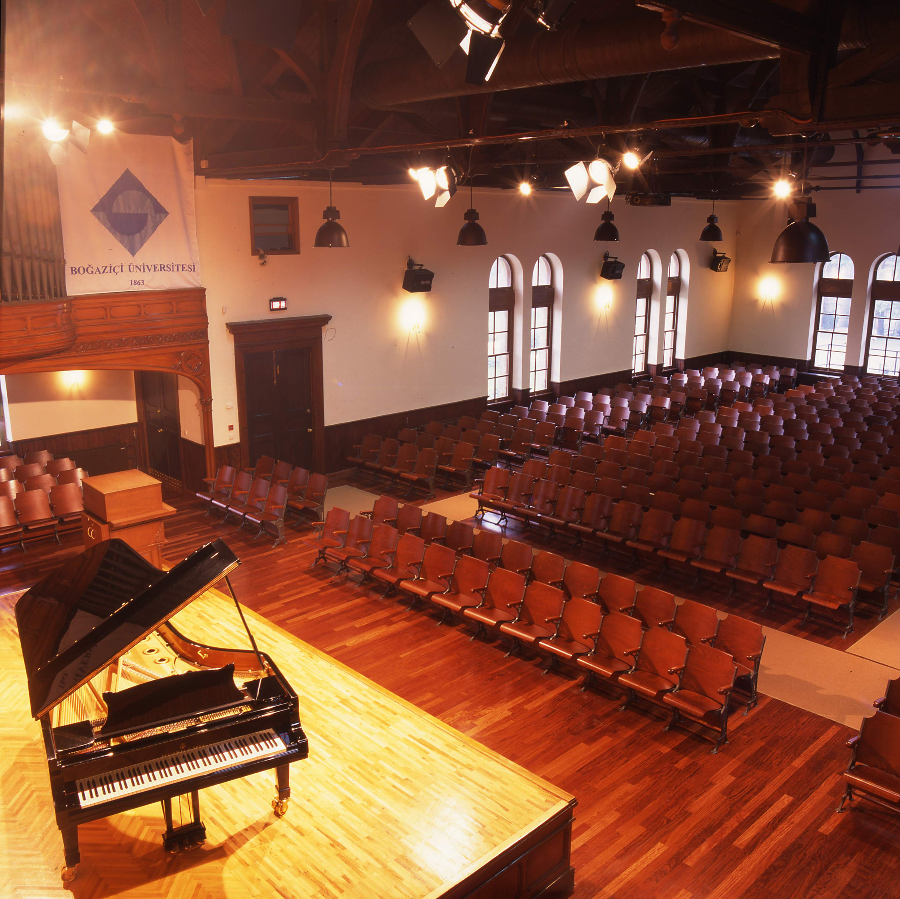

Bu yıl, 2-5 Temmuz tarihlerinde İstanbul’da düzenlenecek olan Boğaz'da Yapay Öğrenme İsmail Arı Yaz Okulu 2018 adlı lisansüstü yaz okulunu duyurmaktan mutluluk duymaktayız. Bu Yaz Okulu, Bilim Akademisi şemsiyesi altında, Boğaziçi Üniversitesi tarafından gerçekleştirilmektedir.
Yaz okullarının ilki 2016 yılında ODTÜ’de 230 kişinin katılımı ile bilgisayarla görme ve derin öğrenme teması üzerinde düzenlenmiş, ikincisi ise geçtiğimiz yıl Hacettepe Üniversitesinde robotik ve yapay öğrenme odaklı olarak Bozkırda Yapay Öğrenme Yaz Okulu 2017 adıyla yapılmıştır. Bu dizinin devamı olarak önümüzdeki yılki yaz okulu temaları biyoenformatik, doğal dil ve konuşma işlemede yapay öğrenme olarak belirlenmiştir. Boğazda Yapay Öğrenme Yaz Okuluna, 2013 yılında kaybettiğimiz Boğaziçi Üniversitesi doktora öğrencisi İsmail Arı'nın adı verilmiştir.
Yaz okulunun amacı, bu alanlarda araştırma yapmak için gerekli olan temel bilgileri tazelemek, son araştırma gelişmeler hakkında bilgilendirmek, tez ve proje konularını tartışmak, endüstri ile lisansüstünü bir araya getirmek, tez öğrencileri ile eğitmen alan uzmanları arasında etkileşimi sağlamaktır. Bu alanlardaki araştırmalara ilgi duyan üniversitelerdeki öğrenci ve öğretim üyeleri, endüstriyel kuruluşlar ve teknokentlerdeki ilgili kişiler yaz okulunun hedef kitlesini oluşturmaktadır.
Toplam dört gün sürecek yaz okulunda, duyurulan alanlarda seçkin araştırmacılar seminerler verecektir. Tez öğrencileri araştırmalarını ve tez çalışmalarını birer poster halinde, görüş alışverişine fırsat verecek şekilde sunma olanağına sahip olacaktır. Akademik bilgileri sunan konuşmaları, araştırmacı endüstriyel kuruluşların tanıtımları izleyecektir.
Yaz okulunda şu konularda konuşmalar yapılacaktır:
Bu uygulamalarda irdelenecek yöntemler:
| Başvurular | : | 16 Şubat - 15 Mayıs |
| Sonuçların Açıklanması | : | 1 Haziran |
| Kesin Kayıt | : | 15 Haziran |
Yaz Okuluna ön kayıtlar 15 Mayıs tarihine kadar alınacaktır. Kabullerde, poster sunacak doktora öğrencileri ve motivasyon ve amaç açısından uygunluk göz önüne alınacaktır. Sonuçların açıklanmasından sonra, kesin kayıt için katılım ücretinin yatırılması gerekecektir. Yaz okuluna katılım ücreti 100 TL olup yaz okulunun sarf giderlerini karşılamaya yöneliktir. Bu ücrete öğlen yemekleri, çay-kahve ikramları ve açılış kokteyli de dahildir. Gereksinim duyan katılımcıların konaklamaları Boğaziçi Üniversitesi Güney Kampüsü öğrenci yurtlarında ücret karşılığı mümkün olacaktır.
Kesin kayıt ve konaklama detayları daha sonra duyurulacaktır.
İletişim: byoyo@boun.edu.tr
| Biyoenformatik | Doğal Dil İşleme | Konuşma İşleme | |||
| Yapay Öğrenme | Özel Konuşmalar | Sosyal Etkinlikler |
Eğitim Günü |
Başlangıç | Bitiş | |
|---|---|---|---|
| Kayıt ve Açılış | 08:30 | 09:00 | |
| Açılış Konuşması Prof. Dr. Mehmed Özkan | 09:00 | 09:15 | |
| Yapay Öğrenmenin Temelleri I
Taylan Cemgil
Bu yarım günlük ders süresince diğer derslerde işlenecek olan, doğal dil işleme, biyoinformatik ve konuşma işleme gibi alanların temelindeki yapay öğrenme kavramlarından bahsedilecektir. Amacımız, yöntemlerin detaylı bir anlatımından çok, modern yapay öğrenmenin modeller ve algoritmalar arasındaki ilişkilere dayanan genel bir resmini oluşturmak olacaktır. Bu derste işlenecek konular:
|
09:15 | 10:20 | |
| Poster Sunumu ve Kahve Molası | 10:20 | 10:50 | |
| Yapay Öğrenmenin Temelleri II
Taylan Cemgil
Bu yarım günlük ders süresince diğer derslerde işlenecek olan, doğal dil işleme, biyoinformatik ve konuşma işleme gibi alanların temelindeki yapay öğrenme kavramlarından bahsedilecektir. Amacımız, yöntemlerin detaylı bir anlatımından çok, modern yapay öğrenmenin modeller ve algoritmalar arasındaki ilişkilere dayanan genel bir resmini oluşturmak olacaktır. Bu derste işlenecek konular:
|
10:50 | 12:10 | |
| Öğle Arası: Poster Sunumu ve Yemek Molası | 12:10 | 13:30 | |
| Yaşam Bilimleri için Yapay Öğrenme
Mehmet Gönen
Yapay öğrenme yöntemleri son yıllarda yaşam bilimlerinde veri toplamanın, saklamanın ve işlemenin kolaylaşması nedeniyle daha popüler hale gelmiştir. Bu konuşmada değişik yaşam bilimleri uygulamaları için geliştirdiğimiz çekirdek tabanlı yapay öğrenme yöntemlerini özetleyeceğim. Öncelikle ülkemizde dünyadaki diğer ülkelere göre daha sıklıkla rastlanan Kırım-Kongo kanamalı ateşi vakalarının bölgesel ve zamana bağlı dağılımının modellenmesi için geliştirdiğimiz yapay öğrenme yöntemimizi açıklayacağım. Ardından kolon kanseri hastalarının önemli bir kısmında görülen FBW7 mutasyonlarının tümör hücrelerindeki gen ekspresyon değerlerine etkisinin belirlenmesi için hücre kültürü ve primer tümör örneklerini beraberce modelleyebilen ve hastalar için yeni terapi önerilerinde bulunabilen transfer öğrenimi yöntemimizden bahsedeceğim. Son olarak çeşitli kanser hastalıklarında hastaların sağ kalım sürelerini ya da tümörlerin patolojik evrelerini tahmin etmekte kullanılan çok çekirdek tabanlı yapay öğrenme yöntemimiz ile elde ettiğimiz başarılı sonuçları anlatacağım.
|
13:30 | 14:50 | |
| Derin Öğrenmeye Giriş Deniz Yüret | 14:50 | 15:40 | |
| Poster Sunumu ve Kahve Molası | 15:40 | 16:10 | |
| Konuşma Tanıma için Yapay Öğrenme
Murat Saraçlar
Bu konuşmada özellikle konuşma ve dil işlemede kullanılan ama daha geniş bir uygulama alanına sahip olan yapay öğrenme yöntemleri üzerinde durulacaktır. Konuşma tanımada kullanılan temel istatistiksel yöntemlerden başlayarak ayırıcı eğitim yöntemleri ve günümüzde kullanılan derin öğrenme yöntemleri anlatılacaktır. Son olarak baştan sona derin öğrenme ve metrik öğrenme konularından bahsedilecektir.
|
16:10 | 17:30 | |
Ses ve Konuşma İşleme Günü |
Başlangıç | Bitiş | |
|---|---|---|---|
| IEEE Signal Processing Society Distinguished Industry Speaker
Speech Recognition: What's Left? Michael Picheny
Recent speech recognition advances on the SWITCHBOARD corpus suggest that because of recent advances in Deep Learning, we now achieve Word Error Rates comparable to human listeners. Does this mean the speech recognition problem is solved and the community can move on to a different set of problems? In this talk, we examine speech recognition issues that still plague the community and compare and contrast them to what is known about human perception. We specifically highlight issues in accented speech, noisy/reverberant speech, speaking style, rapid adaptation to new domains, and multilingual speech recognition. We try to demonstrate that compared to human perception, there is still much room for improvement, so significant work in speech recognition research is still required from the community.
|
09:00 | 10:10 | |
| Poster Sunumu ve Kahve Molası | 10:10 | 10:30 | |
| Türkçe için Konuşma Tanıma ve Derin Öğrenmeyle Dil Modelleme
Ebru Arısoy
İstatistiksel dil modeli, konuşma tanıma, makineyle çeviri ve otomatik kelime düzeltme gibi birçok dil işleme uygulamasının en temel bileşenlerinden biridir. Derin öğrenme yöntemleri birçok makineyle öğrenme uygulamasında olduğu gibi dil modellemesinde de kullanılmaktadır. Derin öğrenme ile eğitilen dil modelleri daha gürbüz olasılık kestirimleri sağlamakta, bu da dil modelinin kullanıldığı sistemlerin başarımlarını olumlu etkilemektedir. Bu konuşmada dil modellemesinde kullanılan klasik yöntemlerden başlayıp, derin öğrenme yöntemlerinin ve farklı yapay sinir ağları yapılarının dil modellemesinde nasıl kullanıldığından ve bu yöntemlerin dil işleme uygulamalarındaki başarımlarına olan etkilerinden bahsedilecektir.
|
10:30 | 11:20 | |
| Tek ve Çok Kanallı Ses Kaynağı Ayırma için Derin Öğrenme
Hakan Erdoğan
Bu konuşmada birbirlerine karışmış ses kaynaklarını ayırma problemi için derin öğrenmenin uygulamalarını ele alacağız. İnsanlar ses kaynaklarını algısal biçimde ayırmayı doğal olarak yapabilmektedirler. Nitekim birçok kişinin aynı anda konuştuğu ve arkaplanda başka seslerinde olduğu bir “kokteyl parti” ortamında, bir insan karşılıklı konuştuğu kişiye odaklanabilir ve diğer sesleri kolaylıkla algısında bastırabilir. Oysa aynı ses ayıklayıcılığı ve seçiciliğini bilgisayarlarla hayata geçirmek çok zor bir problem olarak karşımıza çıkmıştır. Son zamanlarda derin öğrenmenin devreye girmesiyle kokteyl parti probleminin çözümünde çok önemli ilerlemeler elde edilmiştir. Sunumda, evrişimsel sinir ağları, uzun kısa-ömürlü-bellek yapay sinir ağları gibi yinelgen sinir ağ yapılarının üst üste binmiş ses kayıtlarını ayırarak tek tek kaynak sesleri elde etme performansı tartışılacak ve negatif olmayan matris ayrıştırması gibi yöntemlerle karşılaştırılacaktır.
|
11:20 | 12:10 | |
| Öğle Arası: Poster Sunumu ve Yemek Molası | 12:10 | 13:30 | |
| Duygulanımsal Konuşma ve İşmar Modelleri için Derin Öğrenme
Engin Erzin
Konuşma süreçleri çoğunlukla yüz, el, beden hareketleri gibi diğer ifade kipleri ile birlikte üretilir. Bu farklı ifade kiplerinin birlikteliği iletişimi kuvvetlendirmek, bir vurgu yapmak ve içeriği zenginleştirmek için, bazen de gürültülü ve karmaşalı bir ortamda daha iyi bir iletişim kanalı oluşturmak için kullanılır. Konuşma ve işmar, yani el ve yüz hareketleri ile yapılan anlatım, bu birlikteliği yaygın kullandığımız iki kiptir. Çok-kipli konuşma analizi, işaret işleme, görüntü işleme ve makineyle öğrenme kullanarak, anlatım kipleri arasındaki eşzamanlılığı ve ilintiyi analiz eder, anlamaya çalışır ve faydalı modellere dönüştürmeyi amaçlar. Çok-kipli konuşma analizinde ileri makineyle öğrenme algoritmalarını etkin bir şekilde kullanmaya elverecek miktarda verilerin bulunmaması sık karşılaşılan problemlerdendir. Makineyle öğrenme bağlamda yakın zamanda çalışılmaya başlanan öğrenme aktarma ya da aktarmalı öğrenme (transfer learning) etiketli veri azlığı için bir çözüm getirmektedir. Aktarmalı öğrenme, yeterli miktarda etiketli veri içeren bir problemin kaynak uzayında öğrenilen bilgiyi, kısıtlı etiketli verilere sahip bir başka problemin çözümü için, bu problemin hedef uzayında öğrenmeyi kolaylaştırmak ve iyileştirmek için kullanır. Bu sunumda, derin öğrenme ve aktarmalı öğrenme yaklaşımlarının duygulanımsal konuşma ve işmar modellerinin analizi, anlamlandırılması ve sentezi üzerine yaptığımız çalışmaları anlatacağız.
|
13:30 | 14:20 | |
| Konuşma Sentezi
Cenk Demiroğlu
Yazılı metinleri insanların okuduğu gibi seslendirip, doğal ve yüksek kaliteli konuşma sinyali üretebilen algoritmalar insanların her yüzyılda hayali olsa da, özellikle son 50 yıldır üzerinde yoğun çalışılan araştırma konusu olmuşlardır. Bu konuşmada, problemin kısa bir tarihçesinden sonra, özellikle son 7-8 yıldır konuşma ve metin işlemenin pek çok probleminde giderek yaygın şekilde kullanıma giren derin sinir ağlarının konuşma sentezi alanına getirdiği devrim niteliğindeki yaklaşımlar, bu en son teknoloji sistemlerin önceki sistemlere göre avantajları ve işleyiş şekilleri anlatılacaktır. Hemen her paradigma değişiminde olduğu gibi, yapay zeka ile ses sentezi de yeni araştırma alanları açmıştır ve bu yeni alanlar ile sahanın şu anki durumu da bu konuşmada irdelenecektir.
|
14:20 | 15:10 | |
| Poster Sunumu ve Kahve Molası | 15:10 | 15:40 | |
| Karma Gerçeklik için Ses Etkileşimleri
Cumhur Erkut
Son yıllarda donanım ve yazılım teknolojilerindeki gelişmeler derinlik etkileşimli ses isleme tekniklerini olanaklı kıldı. Yüksek çözünürlüklü ama verimli ses benzeşim teknikleri karma gerçekliğin birçok uygulaması için temel bir unsur haline geldi. Bu konuşma / çalıştay, ses etkileşim benzeşimlerinin son durumunu ve yeni gelişmelerini uygulamalı olarak sunacak ve beş bolümden oluşacak: 1) Giriş: Karma Gerçeklik için Ses Etkileşimleri- kuram ve pratik, 2) Ses kaynaklarının sınıflandırılması ve modellenmesi (hareket ve çevresel etkileşimler), 3) Sanal ortamda ses yayılımı (dalga, geometrik ve karma modeller), 4) Kullanıcıya sunum ve etkileşim (kulaklık/hoparlör bazlı teknikler), 5) Özet: Yeni uygulamalar ve çözüm bekleyen sorunlar. Benzeşimler MATLAB üzerinde uygulanacak, Resonance Audio ve benzerlerine taşınmaları özetlenecek.
|
15:40 | 17:00 | |
Biyoenformatik Günü |
Başlangıç | Bitiş | |
|---|---|---|---|
| Bioinformatics: An Information Theory and Signal Processing Perspective
Khalid Sayood
The term bioinformatics was originally created to refer to "the study of information processes in biotic systems". The idea being that given the importance of information processing in living systems there should be a field of study devoted to it. Then came the sequencing revolution and the problem rapidly became one of trying to handle the firehose of data being generated. The result was a more data oriented area, focused on issues of archiving, disseminating, and pattern recognition and classification. Bioinformatics has often become synonymous with computational 'pipelines'. This is not to say that all of bioinformatics falls into this category and there have been efforts throughout that have taken a more information oriented view of the data being generated. In this talk we focus on this less well known aspect of bioinformatics. We will look at a communication theory perspective where the biological molecules are viewed as messages. We will look at information theoretic analysis of these messages and we examine different situations in which a communication model can result in useful applications.
|
09:00 | 10:20 | |
| Poster Sunumu ve Kahve Molası | 10:20 | 10:50 | |
| I. Effective and Efficient Data Compression for High Throughput Genomics
Cenk Şahinalp
High-throughput genomic sequencing (HTS) data are commonly stored either as raw sequencing reads in FASTQ format, or as reads mapped to a reference in SAM format. Both of these formats have large memory footprints. Worldwide increase of HTS data has prompted the development of specialized compression methods that aim to significantly reduce HTS data size. In this part of the talk we will have an overview of available lossless genomic data compression approaches and demystify why some of them achieve good compression performance.
|
10:50 | 12:10 | |
| II. Protecting Genomic Data Privacy with Probabilistic Modeling
Cenk Şahinalp
The proliferation of sequencing technologies in biomedical research has raised many new privacy concerns. These include concerns over the publication of aggregate data at a genomic scale (e.g. minor allele frequencies, regression coefficients). Methods such as differential privacy can overcome these concerns by providing strong privacy guarantees, but come at the cost of greatly perturbing the results of the analysis of interest.
In this part of the talk we will present an alternative approach for achieving privacy-preserving aggregate genomic data sharing without the high cost to accuracy of differentially private methods. In particular, we demonstrate how other ideas from the statistical disclosure control literature (in particular, the idea of disclosure risk) can be applied to aggregate data to help ensure privacy. This is achieved by combining minimal amounts of perturbation with Bayesian statistics and Markov Chain Monte Carlo techniques. We test our technique on a GWAS dataset to demonstrate its utility in practice. |
|||
| III. Tumor Phylogeny Reconstruction via Integrative use of Single Cell and Bulk Sequencing Data
Cenk Şahinalp
Recent technological advances in single cell sequencing (SCS) provide high resolution data for studying intra-tumor heterogeneity and tumor evolution. Available tools for tumor phylogeny inference using SCS data are typically based on probabilistic approaches that aim to identify the most likely perfect phylogeny tree.
In this part of the talk we will describe a new combinatorial formulation for inferring tumor phylogenies by an integrative use of single cell and bulk sequencing data, with the objective of minimizing a (weighted) linear combination of (i) potential false negatives, and (ii) potential false positives among mutation calls, as well as (iii) the weighted number of mutations that violate the infinite sites assumption (ISA) - to be eliminated, giving rise to a Sub-perfect phylogeny. Our formulation achieves this by making sure that several lineage constraints imposed by the use of variant allele frequencies (derived from bulk sequence data) are satisfied. We express our formulation both in the form of an integer linear program (ILP) and - for the first time in the context of tumor phylogeny reconstruction - a boolean constraint satisfaction problem (CSP) and solve them by leveraging state-of-the-arts ILP/CSP solvers. The resulting tool is more general than the alternatives since it handles possible ISA violations by certain mutations (due to, e.g., segmental deletions involving mutation sites) through the integrative use of single cell and bulk sequencing data. Using several simulated and real SCS data sets, we demonstrate that our tool is not only more accurate but also is much faster than the alternative tumor phylogeny inference tools, especially when its CSP-based version is employed. |
|||
| Öğle Arası: Poster Sunumu ve Yemek Molası | 12:10 | 13:30 | |
| Makineyle Öğrenme ile Sinirsel Gelişim Hastalıkları için Gen Keşfi
Ercüment Çiçek
Otizm için yürütülen geniş çaplı tüm ekzom dizileme çalışmaları 4000’den fazla aileyi incelemesine karşın sadece 65 civarında geni otizm ile ilişkilendirilebilmiştir. Genetik mimarinin 1000 kadar geni barındırdığı tahmin edilmektedir, bu da tüm yapbozu çözmemizin oldukça uzun süreceği ve masraflı olacağı anlamına gelmektedir. Bu sureci hızlandıracak makinayla öğrenmeye dayalı algoritmaların geliştirilmesi önem taşımaktadır. Bu konuşmada, otizm gibi kompleks sinirsel gelişim hastalıkları için geliştirilmiş makinayla öğrenme temelli gen keşfi algoritmaları tanıtılacaktır ve son gelişmelerden bahsedilecektir.
|
13:30 | 14:20 | |
| Doku ve Hastalıklara Özgü Büyük Ölçekli Biyolojik Ağların Oluşturulması ve Analizi
Tolga Can
Bir hücre içinde gerçekleşen bütün moleküler etkileşimlerin, kimyasal reaksiyonların detaylı olarak modellenmesi ve bu modellerin kullanılarak tahminlerde bulunulması sistem biyolojisi alanının en büyük hedeflerindendir. Bu amaçla yıllardır farklı araştırma gruplarının çalışmalarıyla protein-protein etkileşimleri, metabolik reaksiyonlar, sinyal ağları, gen regülasyon ağları ortaya çıkarılmıştır. Farklı model organizmalar için genom ölçeğinde çok miktarda veri herkese açık veritabanlarında bulunmaktadır. Bu konuşmada hedefim bu veritabanlarındaki büyük sistem biyolojisi verilerini sizlere tanıtmak ve aslında oldukça dinamik olan sistem seviyesi etkileşimlerinin nasıl daha etkin olarak analiz edilebileceği konusunda fikirler vermektir.
|
14:20 | 15:10 | |
| Poster Sunumu ve Kahve Molası | 15:10 | 15:40 | |
| Sıralama Öğrenme ile Sağkalım Tahmini
Öznur Taştan
Son yıllarda, kansere dair somatik değişimlerin karakterizasyonuna yönelik önemli gelişmeler kaydedildi. Kanser Genom Atlası gibi büyük ölçekli projelerde, kanser hastalarının genomlarındaki değişiklikler ve gen ekspresyon profilleri gibi çok boyutlu ve yüksek çeşitlilikte veriler elde edildi. Bu verilerin, daha iyi tedavi yöntemleri geliştirilmesinde kullanılabilmeleri, etkili hesaplama tekniklerinin geliştirilmesini gerektiriyor. Bu amaç doğrultusunda, kanser hastalarının hayatta kalma oranlarını öngören, Sıralamaya Öğrenme ile Sağkalım Tahminleme (RSurVM) yöntemini geliştirdik. Yöntemimiz, sağkalım performans metriği olarak yaygın olarak kullanılan uyum endeksini optimize etmeye odaklanarak, hastaların hayatta kalma oranlarını sıralama yöntemiyle tahmin ediyor. Bu yöntem, sansürlü sağkalım verilerini de varsayımlar yapmadan modele dahil etmeyi olanaklı kılıyor. Sağkalım için en sık kullanılan iki yöntem olan Cox Orantılı Tehlike Modeli ve Rastgele Sağkalım Ormanı ile karşılaştırdığımızda, RSurVM, kullanılan genomik ve transkriptomik veri tipinden bağımsız olarak, daha iyi sonuçlar veriyor.
|
15:40 | 16:30 | |
| Ağ Hesaplamasına Dayalı Biyolojik Veriler Işığında Karmaşık Kökenli Hastalıklarının Nedenbilimi
Uğur Sezerman
Günümüzde yeni nesil dizileme teknolojilerindeki gelişmelerle genom ve buna paralel olarak transkriptom, proteom ve benzerleri verilere makul süreler ve bütçe ile ulaşmak mümkün olmuştur. Bu verilerin her biri sağlıklı kişiden gelen verilerle karşılaştırılarak kişiye özel hastalık oluşum ve gelişim süreçlerini ve tedavi hedeflerini belirlemek için kullanılabilir. Önemli olan tüm verilerin tümleştirilerek edilerek hepsi tarafından desteklenen mekanizmaların belirlenmesidir. Bu konuşmada bu verilerin hastalık bazında ağ hesaplamalarıyla entegre edilme yöntemleri irdelenecektir. Ayrıca kanser, nadir hastalıklar ve nörolojik hastalıklardaki uygulamaları özetlenecektir.
|
16:30 | 17:20 | |
| Yapay Öğrenme ile Biyolojik Dizilerin Anlamlandırılması
Volkan Atalay
Biyolojik dizilerin anlamladırılması (sequence annotation) DNA, RNA veya protein dizilerinin özgül özelliklerinin yapı veya işlev hakkında betimleyici bilgi ile işaretlenmesi işlemidir. Proteinlerin işlevlerinin bilinmesi, kanser gibi ölümcül süreçlerin önlenmesi ya da durdurulmasından, her türlü hastalık için ilaç tasarımı konularına kadar çok geniş bir yelpazede vazgeçilmez öneme sahiptir. Çok sayıda proteinin işlevlerinin in silico (bilgisayar kullanarak) öngörmek için geliştirdiğimiz yapay öğrenme ve derin öğrenme yöntemleri, eğitim ve sınama veri kümelerinin oluşturulması, başarımlarının değerlendirilmesi ve standart veri kümeleri üzerinde karşılaştırılmalarının yapılması sunulacaktır.
|
17:20 | 18:00 | |
Doğal Dil İşleme Günü |
Başlangıç | Bitiş | |
|---|---|---|---|
| Türkçe Doğal Dil İşleme
Kemal Oflazer
Bu konuşmada önce doğal dil işlemenin temel kavramları, teknikleri ve uygulamaları özetlenecek, sonrasında da Türkçenin doğal dil işleme açısından ilginç ve çeşitli zorluklar getiren yönleri üzerinde durulacaktır. Sunumun devamında Türkçenin biçimbirimsel çözümlemesi, sözcüklerin çevrimdeki çözümlerinin seçilmesi, çok sözcüklü yapıların tanınması, sözdizimi çözümlemesi, adlı varlıkların işaretlenmesi gibi temel adımların ve makineyle öğrenmeye dayalı teknikler ele alınacaktır. Bu bağlamda bu tekniklerin uygulanması için gerekli kaynakların geliştirilmesi ve son 15-20 yılda yapılan çalışmaların ayrıntıları verilecektir. Konuşmanın sonunda bilgisayarla çeviri, soru yanıtlama ve de duygu çözümlemesi gibi bazı uygulamalardan örnekler verilip önümüzdeki yıllarda Türkçe için gerek bilimsel önemi gerekse de uygulama potansiyeli olan konular üzerine düşünceler aktarılacaktır.
|
09:00 | 10:20 | |
| Poster Sunumu ve Kahve Molası | 10:20 | 10:50 | |
| Uygulamalı Türkçe doğal dil işleme evreleri: Normalizasyon, Sözcük Analizi, Varlık İsmi Tanıma ve Cümle Analizi
Gülşen Cebiroğlu Eryiğit
Bu oturumda Türkçe sentaktik düzeye kadar olan doğal dil işleme evreleri ve yapılan çalışmalar hakkında özet bilgiler verilecektir. Metin normalizasyonu, biçimbilimsel çözümleme ve belirsizlik giderme, bağlılık analizi ve varlık ismi tanıma bu aşamalardan bazılarıdır. Aşamaların tanıtımları “tools.nlp.itu.edu.tr” adresinde araştırmacıların hizmetine sunulan ITU Doğal Dil İşleme Web Servisleri üzerinden yapılacaktır. Ayrıca bu araçlar kullanılarak son yıllarda yürütülen bazı doğal dil işleme araştırma projelerinden örnekler sunulacaktır.
|
10:50 | 12:10 | |
| Öğle Arası: Poster Sunumu ve Yemek Molası | 12:00 | 13:30 | |
| Bilgisayarlarla Etkin Sözel İletişim için Yapay Zeka ve Elektronik Akıllı Yardımcı
Ruhi Sarıkaya
Bilgi hizmetleri kullanıcılarının bilgisayarlar ve ağlar üzerinde yürütülen uygulamalar ve servislerle etkin bir şekilde doğal dil yoluyla etkileşebilmelerinin önünde üç ana engel vardır: 1) Uygulama/servislerin aranıp bulunması, 2) Uygulama/servisin ne gibi işler yaptığının anlaşılıp kavranılması, 3) Bu sistemlere kısıtlı bilgi akışı. Bu üç engelle yapay zekaya dayalı akıllı elektronik yardımcılar aracılığı (IPDA: Intelligent Personal Digital Assistants) ile yapılan doğal sözel iletişimde de karşılaşılmaktadır. Örneğin kullanıcılar genelde IPDA'lerin hangi uygulama ve servisleri kapsadığını, bunların tam olarak ne yaptığını da bilemezler. Bu sistemlerle klavyede yazmak ve dokunmak suretiyle iletişim etkili bir yöntem değildir. Ayrıca IPDA sistemlerinin bağlamsal dil anlama kapasiteleri de sınırlıdır. Bu konuşmada IPDA sorunları tartışılıp çözüm önerileri ele alınacaktır. Ayrıca IPDA sistemlerinin ana bileşenleri olan uyandırma sözcüğü (wake-word) modellemesi, konuşma tanıma, doğal dil anlama, diyalog yönetimi, doğal dil üretimi, cümlelerin akustik sentezi (metinden konuşma sentezi), sıralama ve çekişme çözme (ranking/arbitration) konularına da odaklanıp bunların ne yaptığını, hangi algoritma ve tekniklerle, nasıl tasarımlanıp ve inşa edildikleri üzerinde durulacaktır.
|
13:30 | 14:50 | |
| Poster Sunumu ve Kahve Molası | 14:50 | 15:20 | |
| Metin Madenciliği ve Doğal Dil İşleme ile Büyük Veriden Bilgiye
Reyyan Yeniterzi
Son teknolojik gelişmelerle birlikte günümüzün en önemli özkaynağı yapılandırılmış, işlenebilir veridir. Mobil ve Nesnelerin İnterneti benzeri cihazlar ile her saniye daha fazla verinin üretildiği çağımızda büyük veri yığınlarının kullanışlı bilgiye dönüştürülmesi çok önemlidir. Gerek imgeler, video, ses gibi yapısal olarak daha karmaşık olan verilerin, gerekse metinlerin işlenmesinde son yıllarda derin öğrenme teknikleri ile birlikte çok önemli gelişmeler yaşanmıştır. Bu konuşmada özellikle metin ve dil işlemede kullanılan derin öğrenme teknikleri ve yapay sinir ağları anlatılacak ve ardından soru cevaplama ve duygu analizi gibi alanlarda bu teknikler kullanılarak yapılan son çalışmalar hakkında bilgi verilecektir.
|
15:20 | 16:10 | |
| Arama Motoru Geliştirme Döngüsü: Sıralamayı Öğrenme ve Bilgiye Erişimin Değerlendirilmesi
Emine Yılmaz
Günümüzde kullanılan çoğu arama motorları sıralamayı öğrenme yöntemlerine dayanan otomatik öğrenme algoritmalarıdır. Bu algoritmaların tasarımı için uygun bir sıralama kalite metriği elzemdir. Böylece kullanıcıların sorgularına karşı getirilen bilgilerin sıralama kalitesi bu metriğe göre değerlendirilip algoritmanın optimizasyonu sağlanır. Bu sunumda ilkin günümüzde kullanılan başlıca sıralama öğrenme yöntemlerinden söz edilecektir. Bunun ardından sıralama kalitesi ölçme yöntemlerine odaklanıp değişik ölçme yöntemlerinin otomatik sıralama öğrenimine olan etkisini ele alınacaktır. Nihayet enformasyon kuramı tekniklerini kullanarak hangi yöntemlerin otomatik sıralama öğrenme için daha etkin olduğu irdelenecektir.
|
16:10 | 17:00 | |
| Bilgisayar Aracılığı ile Çeviri
Kemal Oflazer
Bu konuşmada bilgisayar aracılığı ile çevirinin çok kısa bir tarihçesinden sonra bu konuda son 20 yıldaki önemli ilerlemelerin temeli olan istatistiksel çeviri yaklaşımının temel kavramları ve yaklaşımları kapsamında paralel metinler, sözcük eşleştirmesi, sözcük ve öbek tabanlı çeviri yaklaşımları ve çeviri çözücü algoritmaları ve Türkçeye uygulamaları üzerinde durulacaktır. Daha sonra da son 3-4 yılda derin öğrenmenin bu probleme nasıl uygulandığı özetlenecektir.
|
17:00 | 17:50 | |
| Biyoenformatik | Doğal Dil İşleme | Konuşma İşleme | |||
| Yapay Öğrenme | Diğer |
2 Temmuz (Sabah Oturumu) |
|
|---|---|
| A Deep Learning Method for Passing Completely Automated Public Turing Test
Şafak Kayıkçı
CAPTCHAs are used for separating humans and machines. With deep learning methods, this tests can be passed automatically. The success of Convolutional Neural Networks is related to the dataset size and quality. In this study, a convolutional neural network implementation is proposed for resolving CAPTCHAs without any human interaction.
|
|
| Learning the Visual Quality of Triangle Meshes
Zeynep Çipiloğlu Yıldız
We propose a novel machine learning based approach for evaluating the visual quality of 3D static meshes. We employ crowdsourcing methodology for collecting data of quality evaluations and metric learning for drawing the best parameters that well correlate with the human perception.
|
|
| SEYREK KODLAMA VE ÇEVRİMİÇİ SÖZLÜK ÖĞRENME KULLANILARAK HİBRİT HİPERSPEKTRAL GÖRÜNTÜ SIKIŞTIRMASI
İrem Ülkü
Seyrek kodlama tabanlı çevrimiçi sözlük öğrenme yaklaşımını literatürde ilk kez hiperspektral görüntülerin sıkıştırılması için adapte eden hibrit bir yöntem önerilmiştir. Çeşitli seyrek temsil algoritmaları kullanılmıştır. Oran-bozulma ve bilgi koruma performansları hesaplanmıştır. Sonuçlar kanıtlıyor ki bit hızı arttıkça sıkıştırma performansları artmaktadır.
|
|
| Görüntüler Üzerinden Kalabalık Analizi
Merve Ayyüce Kızrak
Kalabalık davranış analizi, kişi sayımı ve takibi için derin öğrenme alanındaki son gelişmeler araştırmacılara geleneksel yöntemlerle karşılaşılan birçok zorluğun aşılmasını sağlamaktadır. Doktora tez çalışmamda da özgün bir model tasarlanarak performansı yüksek ve özellikle son yıllarda özellikle metropol şehirlerdeki güvenliğin sağlanmasını hedefleyecek anormal kalabalık davranışlarının kestirilmesi hedeflenmektedir.
|
|
| Görüntüler Üzerinden Kalabalık Analizi
Orhan Kesemen
Bu çalışmada, sığ yeraltının araştırılmasında kullanılan yer radarı aletiyle yapılan ölçümlerde elde edilen verilerin yer altı derinlik görüntüsüne dönüştürülmesinde kullanılacak hız bilgisinin elde edilmesi amaçlanmıştır. Bunun için kullanılan Hough dönüşümünün uzun zaman alması pratik çözümleri imkansız kılmaktadır. Daha hızlı bir çözüm için stokastik bir optimizasyon yöntemi olan ABC algoritması kullanılmıştır. Bu yöntemin probleme uyarlanması için çok tepeli ABC algoritması geliştirilmiş ve daireler üzerinde gücü test edilmiştir. Daireler üzerinde başarımını artırmak için daire kenarlarını bulanıklaştırmak için Gaussian süzgeci kullanılmıştır. Geliştirilen çok tepeli ABC algoritması radargram verilerine uygulandığında başarımın artırılması için, radargram verilerine ön işlemlerden sonra Hilbert dönüşümü uygulanmıştır. Algoritmanın uygulanmasından sonra elde edilen radargram görüntüsündeki hiperbollerin hem sayıları hem de parametreleri (konum-hız) otomatik olarak belirlenmiştir. Anahtar Kelimeler: Çok Tepeli Optimizasyon, Yapay Arı Koloni Algoritması, Çoklu Çember Algılama, Yer Radarı Hiperbolleri.
|
|
| Compression of Volumetric Medical Images
Erdoğan Aldemir
The subject of my project is to develop a new novel compression scheme. The lossless techniques are the main interest of the of my Ph.D. thesis. Transform- and entropy-based methods are examined in order to develop a novel method that takes account of the morphological structure of the medical data.
|
|
| Image Compression on Kidney MR Images Using Circlet Transformation
Esra Kaya
Nowadays, medical images are frequently used for the diagnosis of diseases and the determination of treatment methods. Medical images are images that are difficult to transmit and store because of high-resolution images, and it is necessary to compress them with methods that do not lose critical information and have high compression ratio. In this study, compression was performed on the kidney MR images by circlet transformation and the results were evaluated by PSNR and MSE values to determine whether circlet transformation was suitable for medical image compression.
|
|
| Görüntü İşlemede Yeni Yaklaşımlar
Dilara Gümüşbaş
Yeterli/Nitelikli sınıflandırılmış verinin olmadığı durumlarda ya da ön-eğitme işlemine tabi tutulmuş modelleri kullanmaya olanak vermeyen farklılıkta veri olduğunda, genelleştirilebilen bir CNN tabanlı modelin olmaması,
CNN’in bölgesel özellikleri(local feature) tespit edip bu özellikleri bir sonraki katmana max-pooling işleminden dolayı konumları ile iletememesi ve buna bağlı farklı resimlerin aynı özelliklere sahip olmasından ötürü aynı sınıf gibi sınıflandırılmaları,
Resim verilerinde yüksek sınıflandırma için eğitme verisinin bir sınıfa ait farklı görünümleri (different viewpoints) içermesi ve bu durumun insanın görüntü algılama sürecinde karşılığının olması bu algoritmanın hibrit modellerinden çok iç yapısının geliştirilmesine ihtiyacı olduğunu göstermektedir.
Kapsül ağının Sıralı Yönlendirme (İterative Routing) ile özelliklerin konumunu koruyarak bir sonraki katmana aktarılmasını ve Harmonik ağların eğitme aşamasında gerekli farklı görünümlere daha az ihtiyaç duymak adına girişten alınan her bir veriyi açısal olarak farklı konumları için de algılayıp, ilişkilendirebilmesi kullanılarak daha güçlü bir algoritma tasarlanması ve daha sonra bu algoritmanın derinlik bilgisini de anlayacak biçimde 3-boyutlu bir çözüm uzayında geliştirilmesi amaçlanmaktadır.
|
|
| Yapay zeka ile fotoğraflarda bulunan rakam ve harf benzeri objelerin tespit edilmesi
Çağrı Kaplan
Bu çalışmada çevrimiçi olan fotoğraf veri tabanları kullanılarak fotoğraflarda herhangi bir harfe ya da rakama benzeyen objelerin sınıflandırılması ve segment edilmesi amaçlanmıştır. Veri tabanlarındaki fotoğraflar başarı oranının arttırılması amacıyla eğitim aşamasında çeşitli şekillerde manipüle edilmiştir. Elde edilen sentetik harf ve rakamlar görsel ifadelere sahip olacağı için oluşturacakları metni anlamsal bütünlük olarak görsel yönden betimleyebileceklerdir.
|
|
| Semi-Supervised Learning with Autoencoders
Derya Soydaner
In this study, shallow and convolutional autoencoders are examined on a few image datasets, and a semi-supervised learning method is proposed combining convolutional networks with autoencoders. Three different neural network architectures is created. The aim is to extract useful features from unlabeled data by means of autoencoders to improve the classification performance.
|
|
| Bazı Bitki Hastalıklarının Görüntü İşleme Teknikleriyle Mobil Cihazlar Kullanarak Tanımlanması
Hüseyin Coşkun
Bu çalışmada bazı bitki hastalıklarının teşhisi için mobil cihazların özelliklerinden faydalanılmıştır. Mobil cihazlara ait kameralar kullanılarak yaprak fotoğrafları çekilmiştir. Bu fotoğraflar görüntü işleme teknikleriyle düzeltilmiş ve zenginleştirilerek hastalık teşhisi için hazır hale getirilmiştir. Elde edilen fotoğraflar, daha önceden hastalık teşhisi yapılmış fotoğraflar kullanılarak eğitilen yapay öğrenme modeline göre sınıflandırılacaktır.
|
|
| Derin öğrenme yöntem ve araçları kullanılarak Türk araç plakalarının tanınması için yeni bir yaklaşım
İrfan Kılıç
Plaka tanıma sistemleri günümüzde çok sık kullanılmaktadır. Bu sistemlerde genellikle görüntü işleme teknikleri ve kartlı çözümler kullanılmaktadır. Bu çözümler yeterli sonuçlar vermesine rağmen bazen yetersiz kalabilmektedir. Bu çalışmada bu yöntemlerden farklı olarak derin öğrenme teknik ve araçları kullanıldı. Derin öğrenme algoritmaları kullanılırken öğrenme sürecine katkı sağlamak için görüntü işleme teknikleri de sürece dahil edildi. Öğrenme süreci Keras derin öğrenme kütüphanesi ile Tensorflow çatısı üzerinde yapıldı. Öğrenme, doğrulama ve test verileri için gerçek veriler kullanılarak tarafımızdan bir veri seti oluşturuldu. Veri setinin eğitilmesinden sonra elde edilen eğitilmiş sistemde test verileri üzerinden plaka tanıma işleminin çok yüksek doğrulukla gerçekleştiği görülmüştür.
|
|
| Bitki Hastalıklarını Tanıma için Derin Öğrenme Kullanılarak Öznitelik Çıkarma
Muammer Türkoğlu
Makine öğrenmesi konularındaki problemlerin çözümünde, son yıllarda derin öğrenme kullanılarak yüksek başarım oranları elde edilmektedir. Bu çalışma, bitki hastalık görüntülerinden öznitelik çıkarılması için derin öğrenme algoritmalarının (Alexnet, Vgg) kullanımı önerilmektedir. Elde edilen parametreler Destek Vektör Makineleri ve En-Yakın Komşu yöntemleri kullanılarak sınıflandırılma işlemleri gerçekleştirilmiş ve başarım oranları değerlendirilmiştir.
|
|
| Tersinir Video Damgalama
Burhan Baraklı
Adaptif aradeğerleme hatalarına dayalı tersinir video damgalama
|
|
| İŞARET DİLİ VİDEOLARINDAN METNE DÖNÜŞÜM İÇİN DERİN ÖĞRENME TEKNİKLERİNİN GELİŞTİRİLMESİ
Esma Yenisarı
Bu çalışmanın amacı; bir servis robotuna, Türk işaret dili konuşan kişilerle gerçek zamanlı etkileşime girmesi amacı ile görsel verileri analiz etme, anlama ve farklı formlarda karşılık verme özelliklerinin kazandırılmasıdır. Bu özelliklerin kazandırılması, işaret dili tanımada henüz kullanılmamış olan derin öğrenme tekniklerinden LSTM (Long Short-Term Memory) ile gerçekleştirilecektir.
|
|
| Metric Learning Based Action Recognition From Three Dimensional Skeleton Data
Seyma Yucer
In this work, we present two different methods for analyzing human actions on 3D skeleton images. The first method is a representation-based solution for human action recognition problem. This method, called the geometric bag of joints based human action recognition, utilizes the spatial-temporal behavior of 3D skeleton frames and uses SoftMax regression method to classify human actions.
The other method is a deep neural network-based method. For this method, we designed a Siamese LSTM-DML network which learns the relationship between actions and recognizes human actions using this relationship information. For each action, sub-LSTM networks extract the temporal features of human actions. Using these features, the network is trained with two-way parameter sharing and learns the deep metrics of actions. Therefore, the end-to-end trainable network can classify human actions. Unlike the other method, this method is more generalizable and can learn the relationship between human actions.
As a part of this study, we created a GTU Action 3D dataset that contains daily indoor activities and indoor sports actions. Our methods are tested against Florence Action 3D, MSR Action3D, NTU RGB+D datasets as well as our own dataset. Also, we compared our methods to related works.
|
|
2 Temmuz (İkindi Oturumu) |
|
|---|---|
| MEVCUT YAPILARDA DEPREM RİSKİNİN HIZLI TARAMA TEKNİKLERİ İLE BELİRLENMESİ
Ayşe Elif Özsoy Özbay
Ülkemizdeki mevcut yapı stokunda bulunan her binanın deprem performansının belirlenmesi için yönetmeliğimizin belirttiği detaylı sayısal analizleri gerçekleştirmek; iş gücü, zaman ve maliyet açısından imkansızdır. Literatürdeki hızlı tarama teknikleri mahalle, ilçe ve kent ölçeğinde yüksek riskli – öncelikli detay araştırma gerektiren – binaların tespiti için son derece önemlidir. Bu çalışmanın amacı, deprem sonrası hasarlı binalardan toplanan – kısa kolon, yumuşak kat, ağır çıkma, bitişik nizam, eğimli arazi vb. gibi- bilgiler ile deprem hasar seviyeleri (hasarsız, hafif hasar, orta hasar, ağır hasar ve göçme) arasındaki ilişkiyi araştırmak ve mevcut hızlı tarama tekniklerini değerlendirmektir.
|
|
| Identification of Possible Velocity Pulses in Earthquake Near Fault Regions by Using Machine Learning Algorithms
Deniz Ertuncay
Pulse shape ground motions have been identified as imposing extreme demands on structures and they are of interest in the fields of seismology and earthquake engineering. TensorFlow and Scikit-learn packages are used in order to process the earthquake parameters and establish a reliable algorithm.
|
|
| Bayesci Negatif Olmayan Matris Ayrışımı için Aktif Eleman Seçimi (Active Selection of Elements for Bayesian Nonnegative Matrix Factorization)
Burak Suyunu
Klasik matris tamamlama problemlerinde elimizdeki matris, gözlemlenen ve bilinmeyen elemanlar olarak iki gruba ayrılabilir. Bu çalışmadaki yaklaşımda ise matrisler üç farklı gruptan oluşmaktadır: bilinen ve masrafsız olarak her zaman erişebildiğimiz gözlemlenmiş olan veri, tahmin etmeye çalıştığımız bilinmeyen veri ve şu an bilinmeyen ancak istenildiği zaman sorgulanabilen veri. Son gruptaki veriler ilk kez sorgulandığında bir maliyet ortaya çıkmaktadır. Bu gözlemden yola çıkarak, mümkün olduğu kadar az sorgu yaparak ikinci gruptaki bilinmeyen verideki değerleri en az hata ile tahminlemek istiyoruz. Amacımız, sorgulamaya çalıştığımız gözlemleri akıllıca seçebilmek. Bu çalışmamızda, gözlem sırası seçme stratejileri tanımlanarak MovieLens veri setinde karşılaştırılmıştır.
|
|
| Özgün tasarımlı CHE'nin performansını etkileyen parametrelerin makine öğrenmesi teknikleri ile tahmin edilmesi
Sinan Uğuz
Data science is capable of solving problems, related to prediction and control, without understanding the inherent causality. On the other hand, complex systems research provides rich insights about the complexity of real world but it is not good at prediction and control. We think that these approaches are complementary to each other and they must be used together to tackle the problems of 21th century.
|
|
| Kaotik Cırcır Böceği Algoritması ile Yapay Sinir Ağı Eğitimi
Murat Canayaz
Yapay sinir ağlarının eğitimi konusunda metasezgisel yöntemler son yıllarda sıklıkla kullanılmaktadır. Bu çalışmada da güncel meta sezgisel yöntemlerden olan sürü tabanlı cırcır böceği algoritmasının kaotik haritalı versiyonunun YSA eğtiminde kullanımı gösterilmeye çalışılacaktır.
|
|
| Makine öğrenmesinde optimizasyon
Yasin Sönmez
ç Öğrenme Makinesi (UÖM) bir tek gizli katmana sahip ileri beslemeli bir Yapay Sinir Ağı (YSA) modelidir [38-40, 79, 80]. YSA’ nın başarımı yüksek öğrenme gerçekleştirebilmesi için eşik değeri, ağırlık ve aktivasyon fonksiyonu gibi parametreleri veri için modellenecek sisteme uygun değerde olmalıdır. Gradyan bazlı öğrenme yaklaşımlarında bu parametrelerin tümü iteratif olarak uygun değer için değiştirilir. Dolayısıyla yavaş ve yerel minimuma takılabilme olasılığı nedeniyle başarımı düşük sonuçlar üretebilmektedir. UÖM Öğrenme süreçlerinde parametrelerini gradyan bazlı olarak yenilenen YSA’ dan farklı olarak giriş ağırlıkları rastgele seçilirken çıkış ağırlıkları analitik olarak hesaplanmaktadır. Analitik bir öğrenme süreci; hem çözüm zamanını hem de hata değerinin yerel bir minimuma takılabilme olasılığını ciddi oranda azalttığından başarım oranı artmaktadır. UÖM’ nin gizli katmanda bulunan hücreleri aktive etmek için doğrusal bir fonksiyon seçilebileceği gibi doğrusal olmayan (sigmoid, sinüs vb.), türevlenemeyen veya kesikli aktivasyon fonksiyonlarda kullanılabilmektedir [38-40, 81-86].
|
|
| Ağaç-Tohum algoritmasının performansının optimizasyon problemleri üzerinde iyileştirilmesi
Ahmet Cevahir Çınar
Ağaç-Tohum algoritması 2015 yılında önerilmiş bir yapay zeka optimizasyon algoritmasıdır. Sürekli optimizasyon problemlerinin çözümü için önerilmiş bu algoritma doktora çalışmam kapsamında kısıtlı ve ayrık optimizasyon problemlerini çözecek şekilde modifiye edilmiş ve geliştirilmiştir. Bu çerçevede araştırmalarım sürmektedir.
|
|
| How to combine complex systems and data science?
Uzay Cetin
Data science is capable of solving problems, related to prediction and control, without understanding the inherent causality. On the other hand, complex systems research provides rich insights about the complexity of real world but it is not good at prediction and control. We think that these approaches are complementary to each other and they must be used together to tackle the problems of 21th century.
|
|
| Doğadan Esinlenerek Geliştirilen Kaotik Haritalı Optimizasyon Yöntemi
Fahrettin Burak Demir
Bilindiği üzere modern dünyada bilginin hızlı artışı ile birlikte problemlerin çözümünde klasik matematiksel yöntemler yetersiz kalmaktadır. Bu tez çalışmasında doğadan esinlenerek geliştirilen yeni bir optimizasyon tekniği önerilecektir. Ayrıca rastgele sayı üreteçleri için hibrit kaotik haritalar kullanılacaktır.
|
|
| Dengesiz Veri Setinde Sınıflandırma Algoritmalarının Performans Değerlendirmesi
Adem Korkmaz
Gelişen bilgi iletişim teknolojileri ile birlikte hayatımızın her alanını sürekli artan veriler kapsamaktadır. Sürekli artan verilerden bilgi çıkarımları günümüzün vazgeçilmez bir parçası olmuştur. Çalışma artan verilerden bilgi çıkarım süreçlerinde karşılan en büyük sorunlardan dengesiz veriden bilgi doğru bilgi çıkarımı amaçlanmaktadır.Bu bağlamda hazır veri ambarlarından KEEL (Knowledge Extraction based on Evolutionary Learning) sitesinden temin edilen “Araç Değerlendirme” dengesiz veri seti kullanılmıştır. Verilerin analizi aşamasında Çapraz Endüstri Standard Süreç Modeli (CRISP-DM: Cross – Industry Standard Process for Data Mining) baz alınarak yapılmıştır. Veri setinde bulunan araç teknik özelliklerine bağlı olarak doğru araç seçiminin belirlendiği hedef nitelik/Sınıf (Pozitif=1, Negatif=0) belirlenerek yapılmıştır. Çalışma R-Studio analiz programı kullanılarak K-En Yakın Komşu (K-NN), Naive Bayes, Random Forest ve ZeroR sınıflandırma algoritmalarının performans karşılaştırılması yapılmıştır. En iyi başarım performansı Random Forest sınıflandırma algoritması ile elde edilmiştir.
|
|
| Evrişimsel Sinir Ağları için Kullanılan Transfer Öğrenme Yaklaşımları
Kazım Fırıldak
Evrişimsel sinir ağları (ESA), yapay sinir ağlarını tabanlı derin öğrenme mimarileridir. Katman ve sinir hücresi sayısının, yapay sinir ağına göre fazlalığından dolayı ESA eğitimi hesaplama maliyeti yüksek bir işlemdir. Bunun yanında probleme özgü eğitim kümesi her zaman oluşturulamamaktadır. Sınıflama başarısı kanıtlanmış, büyük ve kapsamlı eğitim veri setiyle eğitilmiş bir ESA’ nın katmanlarından ağırlık transferi yaygın kullanılan yöntemdir. Ön eğitim, özellik çıkarıcı ve kısmi özellik çıkarıcı yaklaşım ESA ‘larda kullanılan transfer öğrenme yaklaşımlarıdır. Bu çalışmada Cifar, Caltech, Mnist veri kümeleri için AlexNet’den transfer edilen ağırlıklarla ESA’lar için sınıflama başarıları incelenmiştir. AlexNet, yeni veri kümelerinin sınıflamasında kullanmak için önişlemlere tabi tutularak farklı veri kümeleri için yüksek sınıflama başarısı göstermiştir. Veri kümelerinin sınıfları, AlexNet’in benzerliği arttıkça sınıflama başarısının transfer öğrenmede arttığı gözlemlenmiştir. Ayrıca Mnist veri kümesinde, transfer öğrenme ile %98 sınıflama başarısına ulaşıldığı ve veri kümesi boyutuna göre sınıflama başarısının değişkenliği gözlemlenmiştir
|
|
| Convolutional Neural Network with ANFIS
Salih Berkan Aydemir
The purpose in work is to replace the last section(FC) of CNN with the ANFIS
|
|
| Reactive Motion Planning with Path-Following for A Self-Balancing Spherical-Wheel Mobile Robot
Ali Nail İnal
Reactive methods for motion planning offer robustness in the presence of large disturbances but have been difficult to generalize to underactuated systems like BallBot. In this study, we propose a reactive path-following solution for BallBot, self-balancing robots with spherical wheels, as an alternative to traditional approaches that perform control through tracking of time-parametrized state trajectories.
|
|
| Fractional Order Admittance Control for Physical Human-Robot Interaction
Yusuf Aydın
In this study, a new controller, fractional order admittance controller (FOAC), is proposed for physical human-robot interaction (pHRI). The stability analysis of the new control system with human in-the-loop is performed and the interaction performance is investigated experimentally with 10 subjects during a pHRI task imitating a contact with a stiff environment. The results show that the FOAC is more robust than the standard admittance controller (IOAC) and helps to reduce the human effort in task execution.
|
|
| Yüksek Ağırlıklı Ürün Taşıyıcı Sürü Robotların Geliştirilmesi ve Bulut Üzerinden Yönetimi
Fatih Okumuş
Kumaş üreten tekstil fabrikalarında ürünler farklı iş istasyonlarında adım adım işlenerek elde edilmektedir. Ürünlerin bu istasyonlar arasında nakli ise hem işçi sağlığı açısından olumsuzluk hem de ek maliyet getirmektedir. Diğer taraftan yapılacak işlem için belirli bir zamanın da harcanması gerekmektedir. Bu çalışmada, fabrika ortamında ağır malzemeler taşıyan Dok araçlarının otonom olarak bir noktadan istenilen başka bir noktaya taşınmasını sağlayacak robotlar geliştirilmektedir. Robotların birlikte çalışabilirliğinin sağlanması ve optimum görev yönetimi için de bulut üzerinde çalışan bir uygulama gerçekleştirilmektedir.
|
|
| Ters Pekiştirmeli Öğrenme ile İnsan Denge Unsurlarının Optimizasyonu
Gökçe Güven
Insan denge unsurlarının çıkarımı ve optimizasyonu için, insandan elde edilen yörüngeler, ters pekiştirmeli öğrenme (ters optimal kontrol) yöntemleri ile, sistemimize göre, geçmişte elde edilen teorik ve deneysel bilgiler ışığında, ayarlanıp kullanılacaktır.
|
|
3 Temmuz (Sabah Oturumu) |
|
|---|---|
| Akıllı Araç Tespit ve Sınıflandırma Sistemi
Seda Kul
Makine öğrenmesi yöntemleri ile gerçek zamanlı olarak araç tiplerinin sınıflandırılması.
|
|
| Akıllı Telefon Hareket Senörlerini Kullanarak Kullanıcının Yaş Gurubu Belirleme
Erhan Davarcı
Bu çalışmanın ana amacı, akıllı telefonların ivmeölçer sensörünün yan kanal bilgi
kaynağı olarak kullanılarak kullanıcının yaş aralığının tespit
edilebileceğinin gösterilmesidir. Kullanıcının ekrana dokunuşları
analiz edilerek kullanıcının çocuk veya yetişkin olduğu yüksek
bir oranda tespit edilmiştir. Elde edilen bu bilgi, saldırganlara
kötü amaçlı eylemleri için ek imkanlar sunabilmektedir.
|
|
| Bitcoin Fiyat Tahmini için ARIMA Zaman Serisi Modeli ve LSTM Derin Öğrenme Modelinin Karşılaştırılması
Ali Osman Çıbıkdiken
Bu çalışmada, ARIMA Zaman Serisi Modeli ve LSTM Derin Öğrenme Algoritması, Bitcoin'in gelecekteki fiyatını tahmin etmek için karşılaştırılmıştır. Zaman serilerinin tahmininde yaygın olarak kullanılan ARIMA modeli R programlama dilinde ve LSTM modeli de Python'daki Keras framework kullanılarak oluşturulmuştur. ARIMA ve LSTM derin öğrenme modelleri kullanılarak Bitcoin'in gelecekteki 30 günün fiyatları tahmin edilmiştir. Sonuçlar yaklaşık olarak ARIMA için MAPE %11.86 ve LSTM için MAPE% 1.40 olarak elde edilmiştir. Sonuçlar karşılaştırıldığında LSTM Modelinin daha başarılı olduğu gözlenmiştir.
|
|
| Evrişimsel sinir ağlarını ve öznitelik korelasyonları kullanarak Borsa İstanbul'un gün içi tahmini
Hakan Gündüz
Çalışmada, BIST 100 hisselerinin yönünü tahmin etmek için özel sıralı öznitelik kümesini kullanan Evrişimsel Sinir Ağı (ESA) önerilmiştir. Öznitelik kümesi; farklı göstergeler, fiyat ve zamansal bilgilerden oluşmuştur. Örnekler ve öznitelikler arasındaki korelasyonlar, öznitelikler ESA'ya verilmeden önce sıralama amacıyla kullanılmıştır. Önerilen sınıflandırıcı, rastgele sıralanmış özniteliklerle eğitilmiş ESA ve Lojistik Regresyonla karşılaştırılmıştır.
|
|
| Derin Öğrenme Algoritmaları ile Mülakat Robotu
Günay Temür
Biz bu çalışmada, bir bireyi değerlendirmek için, daha önceden alanında uzman ve uzman olmayan kişilerden alınan verilerin derin ağlar ile eğitilip, mülakata giren kişilerin deneyimlerinin uzman sınıfına dâhil olup olmadığına veya alınacak eleman için yeterli vasıfları taşıyıp taşımadığına karar verebilecek mülakat robotu adı altında bir bilgisayar programı geliştirmeyi amaçlıyoruz. Bu robot sayesinde mülakat değerlendirme sonuçlarının yanlı görüşlerden ayrıştırılıp, tüm katılımcıların eşit olarak değerlendirilmesini hedefliyoruz.
|
|
| Derin Öğrenme İle Isparta Elektrik Şebeke Sistemlerinin Durum ve Yük Analizi
Onur Mahmut Pişirir
Veri analitiği enerji sektöründe hızlı karar verme aşamasında çok kritik bir öneme sahiptir. Maliyetleri düşürecek sistem ve varlık verimliliğinin sağlanması için birçok entegrasyona ihtiyaç duyulmaya başlanmıştır. Daha önce yapılan çalışmalarda elektrik kullanımı ile gerçek zamanlı bir çözüm değil matematiksel ya da istatistiksel olarak tahminler yapılmaya çalışılmıştır. Ancak bu çalışmalar yapay zekâ teknikleri eklenmesine rağmen yetersiz kalabilmektedir. Yapılacak olan derin öğrenme sayesinde elektrik şebekelerinde abone taraflı kullanım ve haneler için yapılacak veri analizleri ile tasarruf sağlanabilmesine katkıda bulunacaktır. Bunun yanı sıra şebekelerdeki yük analizi ile bölgesel olarak şebeke yükünün dengelenmesi için gerekli çözümleri sunabilecek bir sistem geliştirilebilecektir.
|
|
| Maki̇ne Öğrenmesi̇ İle Akademi̇k Açıdan Ri̇skli̇ Öğrenci̇leri̇ Beli̇rleyen Sanal Danışman Tasarımı
Mehmet Taş
Öğrenme analitiği öğrencilere ne karar vermesi gerektiği konusunda olduğu gibi verileri karar vermek için nasıl kullanacağına da yardımcı olabilir. Çalışmada, öğrenci merkezli, gerçek verilere dayanan, güncel makine öğrenmesi tekniklerinin kullanılacağı, geleceğe yönelik tahminleri ve riskleri barındıran, kişiselleştirilebilir, özet raporlar ve grafiklerle karar vermeyi kolaylaştıran, danışmanlık ihtiyacı duyan öğrenciyi öğrenci bile farkında olmadan önce tespit edebilecek bir sistem tasarlanması amaçlanmaktadır.
|
|
| Makine Öğrenmesi Teknikleriyle Otel Rezervasyon İptallerinin Tahmin Edilmesi
Mehmet Boz
Rezervasyonlar müşteri ile otel arasında yapılan sözleşmelerdir. Müşteri belirtilen tarihler arasında otelde konaklamayı, otel yönetimi ise o tarihlerde müşterinin talep ettiği odanın boş olmasını ve müşterinin kullanımını sağlamayı taahhüt eder. Bu yolla otel açısından risklerin minimize edilmesi, müşteri açısından ise talep edilen hizmetin herhangi bir aksaklık yaşamadan alınması sağlanır. Ancak rezervasyonlar çeşitli nedenlerle müşteri tarafından iptal edilebilmektedir. Rezervasyon iptalleri, tüm otellerde toplam rezervasyonların %20’sini, havalimanına yakın olan veya yol üstünde bulunan otellerde ise toplam rezervasyonunu %60’ını bulmaktadır.
Bu çalışmada, mevcut rezervasyon verileri kullanılarak, gelecekteki rezervasyon iptallerini tahmin edecek bir model geliştirilmesi amaçlanmaktadır. Oluşturulacak modelin otel yöneticilerine, iptal edilebilecek rezervasyonlarla ilgili bir ön uyarı sistemi olarak çalışması amaçlanmaktadır. Bu sayede otel yöneticilerinin iptal edilme olasılığı yüksek olan rezervasyonlarla ilgili önleyici tedbirler almasına olanak sağlanabilir veya iptal politikalarının kişilere özel olarak ayarlanması sağlanabilir.
|
|
| Yapay Zeka Yöntemlerini Kullanarak Otonom Araç Eylemlerinin Geliştirilmesi
Merve Arıtürk
Otonom araçlar içerisinde bulundurdukları otomatik kontrol sistemleri sayesinde bir sürücüye ihtiyaç duymadan yolu, trafik akışını ve çevresini algılayarak sürücünün müdahalesi olmadan seyir halinde gidebilen otomobillerdir. Otonom araçların otomatik pilot sürüşü üzerindeki sensörler yardımı ile frenleyen veya park etmiş durumda olan araçların konumlarını tespit etmesiyle başlıyor ve bunun gibi çok çeşitli sensörlerden gelen verilerin merkezi bir bilgisayar sistemiyle analiz edilip direksiyon kontrolü, frenleme, hızlanma gibi olaylar gerçekleştiriliyor. Gelişmiş sürücü destek sistemleri (Advanced driver-assistance systems, ADAS), güvenlik ve daha iyi sürüş için araç sistemlerini otomatikleştirmek, uyarlamak ve geliştirmek için geliştirilmiş sistemlerdir. ADAS'ın araca sağladığı otomatik sistem, insan hatalarını en aza indirerek kaza ve ölümleri azaltma konusunda kanıtlanmıştır. Karayolu taşımacılığı terminolojisinde, bir şerit kalkış ikaz sistemi, araç, şeridin dışına çıkmaya başladığında sürücüyü uyarmak için tasarlanmış bir mekanizmadır. Çarpışmadan kaçınma sistemi, bir çarpışmanın şiddetini önlemek veya azaltmak için tasarlanmış bir otomobil güvenlik sistemidir. Ayrıca bir çarpma öncesi sistemi, ileri çarpışma uyarı sistemi veya çarpışma azaltma sistemi olarak bilinir. Yakın bir kazayı tespit etmek için radar (tüm hava koşulları) ve bazen lazer (LIDAR) ve kamera (görüntü tanıma işlevi) kullanır. GPS sensörleri, bir konum veri tabanından stop işaretlerine yaklaşmak gibi sabit tehlikeleri tespit edebilir. Bir otomotiv gece görüş sistemi, sürücünün algısını artırmak ve karanlıkta veya aracın farlarının ulaşamayacağı kadar kötü havalarda uzaklığı görmek için bir termografik kamera kullanır. Bu tür sistemler, bazı araçlarda isteğe bağlı donanım olarak sunulmaktadır. Çalışmanın amacı, otonom araçlarda şerit takibi yaparak keskin viraja sahip yollardaki yanılma/hata oranının azalmasını hedefleyen algoritmanın tasarlanması ve test edilmesidir. Destek sistemini standartlara uygun derin öğrenme ve makine öğrenmesi teknikleri ile geliştirilecek algoritmaya ek olarak, otonom araçların gece/karanlık ortamlarda kullanımının daha optimal hale getirilmesi ve acil durumlarda (ambulans, itfaiye, polis vs.) karar verme mekanizmasının eklenmesi hedeflenmektedir.
|
|
| On Power Allocation for Visible Light Positioning Systems
Ahmet Dündar Sezer
Optimal power allocation among light emitting diode (LED) transmitters in a visible light positioning (VLP) system is presented for the purpose of enhancing localization performance of visible light communication (VLC) receivers in the presence of practical constraints including individual and total power limitations and illuminance constraints.
|
|
| End-to-end Keyword Search
Alican Gök
|
|
| Duygu tanımada yeni bir özellik çıkarımı yaklaşımı
Semiye Demircan
Bu çalışmada ses verilerini içeren duygu veritabanı Emo-DB kullanılarak duygu tanıma işlemi gerçekleştirilmiştir. Çıkarılan özelliklerin seçiminde duygu tanıma sistemini etkileyen parametrelerin belirlenmesi ve bunun tanıma başarısına olan etkisi araştırılması amacıyla özellik seçim yöntemleri geliştirilmiştir. Önerilen yöntemlerin sonucunda elde edilen parametreler farklı yöntemlerle sınıflandırılmıştır.
|
|
| Automatic Fatigue Detection From Speech
Hacer Bayıroğlu
Biological, psychological, social and cultural needs must be met in order to survive the existence of a person. Fatigue is a natural phenomenon for the self-control and self-protection of the human body. It disturbs cognitive functions by disturbing attention, alertness, concentration, reasoning and problem solving. And the perception of fatigue situations has a positive proposition for all occupations. In order to be able to detect automatic fatigue from the voice, in a quiet environment the voice data was collected from 40 students while they were alert and tired.
|
|
| Bürünsel, Sözcüksel ve Biçimbilgisel Bilgiyi Kullanan Eğ-Eğitim ile Türkçe Konuşma Dilinin Otomatik Cümle Bölütlemesi
Doğan Dalva
Bu çalışmada çok bakışlı yarı öğreticili yöntemler geliştirerek, daha az el ile etiketlenmiş veri ile standart yöntemlere göre daha yüksek başarımın sağlanması hedeflenmektedir. Bu çalışmada sözcüksel, biçimbilgisel ve prozodik özellikleri kullanan, agreement, disagreement ve self-combined yöntemleri ile beraber çalışan yeni üç bakışlı ve kurul tabanlı yöntemler geliştirildi.
|
|
| Öğrenme Aktarmanın Çok-Kipli Konuşma Analizi için Kullanılması
Mehmet Ali Tuğtekin Turan
Çok-kipli konuşma analizi, kipler arası ilintiyi analiz eder, anlamaya çalışır ve faydalı modellere dönüştürür. Makine öğrenme altında yakın zamanda çalışılmaya başlanan öğrenme aktarma (transfer learning), yeterince büyük ve etiketli veriden öğrenilen bilgiyi, az miktardaki veriyle yapılan öğrenmeyi iyileştirmede kullanır. Marjinalleştirilmiş gürültü giderici yığın otokodlayıcı (mGGYO) mimarisi, kipler arası gizli öznitelik uzaylarını sınıflandırma problemi olarak çalışmıştır. Bu çalışma mGGYO'yu çok-kipli konuşma analizi için uyarlayarak, gırtlak mikrofonu kayıtlarının algılanan kalitesini ve anlaşılabilirliğini iyileştirmeyi hedeflemektedir.
|
|
| Multi-Task Learning for Spoken Language Understanding with Aligned and Unaligned Annotations Using Bi-LSTM
Emrah Budur
The typical conversational agents models requires the utterances to be annotated word by word which is a time consuming task. In this study, we propose a novel model for extracting structured information out of utterances by utilizing not only word-level annotations but also sentence-level annotations by using deep learning methodologies.
|
|
3 Temmuz (İkindi Oturumu) |
|
|---|---|
| EEG İşaretleri için Belirleyici Kanalların Farklı Metotlarla Tespiti
Abdurrahman Özbeyaz
Elektroansefalogram (EEG), kafatasındaki farklı konumlardan elde edilir. Günlük yaşamımızda etrafımızdaki olaylar hakkındaki bilgilerin kafatasından okunması Elektroansefalogram teknolojisinde elektrotlar yardımı ile yapılabilir. Bu elektrotlar kafatasına belirli bir standarda göre yerleştirilir ve yerleştirilen kanal sayıları uygulamadan uygulamaya farklılık gösterebilir. Belirli amaçlar için elde edilen EEG işaretlerinin sınıflandırılmasında çalışmanın konusu ile ilgili belirleyici kanalların seçilmesi genellikle analiz aşamasında çözülmesi gereken bir problem olarak araştırmacıların karşısına çıkmaktadır. Yapılan bu çalışmada altı farklı kanal seçim yöntemi önerilmiştir. Bu yöntemler; pearson corr., fisher score, mutual information, kullback leibler, relative entropy ve variance ratio. Bu yöntemlerden dördünde farklı sınıflara ait uyarılmış potansiyeller üzerinden kanallar arasındaki uzaklık hesaplanırken diğer ikisinde ise farklı sınıflar arasındaki kovaryans matrisi hesaplanarak belirleyici kanalların tespiti yapılmaya çalışılmıştır. Çalışmadaki metotlar, EEG işaretlerinin sınıflandırılmasında kanal seçimi sürecinde araştırmacılara yön gösterebilecek niteliktedir.
|
|
| Uyku Hastalıklarının Tespiti için EEG sinyallerinin Derin Öğrenme ile İşlenmesinde Yeni Bir Yaklaşım
Göksu Zekiye Özen
Uyku evrelemesi ve hastalıkların tespiti için otomatikleştirilmiş sistemlere ihtiyaç duyulmaktadır. Derin öğrenme yöntemleriyle doğrudan ham veri üzerinden anlamlı sonuçlar elde etmek ve karmaşık sistemleri çözümlemek mümkündür. Çalışmamızda derin öğrenme yöntemleri CNN ve RNN ile elektroensefalografi (EEG) sinyalleri işlenerek uyku hastalıklarını tespit etmede otomatikleştirilmiş yeni bir yöntem önerilmektedir.
|
|
| Multipl Skleroz EEG Bağlantısallık Analizi
Soner Kotan
Multipl Skleroz (MS), merkezi sinir sistemini etkileyen ve inflamasyon, demyelinizasyon ve akson hasarı oluşturan bir bağışıklık sistemi hastalığıdır. Hastalığın teşhisi ve ilerleyişi hakkında bilgi sahibi olunması için uzun süreli takip ve MRI tetkikleri gereklidir. Bu çalışmada MS'in EEG sinyalleri kullanılarak teşhisi ve ilerleyişi hakkında kestirim yapılması amaçlanmaktadır.
|
|
| EEG SİNYALLERİNİN YAPAY ÖĞRENME İLE İŞLENMESİ
Selma Büyükgöze
Beyin-Bilgisayar Arayüzü (BBA), beyin ile çevresel bir arabirim arasında doğrudan iletişim kurmayı sağlamak için kullanılan bir iletişim yoludur. Bu yollardan biri olan EEG ise kullanımı en kolay yöntemdir. Çalışmada beynin elektriksel aktivitesini ölçmek için EEG cihazı ile deneklere farklı türlerde müzikler dinletilecek olup, elde edilen öznitelikler ile kişinin beğenip beğenmediğine dair yapay sinir ağları ile çıkarımlar yapılacaktır. Sonraki aşamada ise aynı deneklere farklı bir müzik dinletilerek kişinin beğenip beğenmeyeceği tahminlenmeye çalışılacaktır.
|
|
| Born-Jordan Zaman Frekans Dönüşümü ve Yapay Sinir Ağları Kullanılarak EKG ST Segmenti Değişiminin Tespiti
İlknur Kayıkçıoğlu
EKG işaretinde ST segmenti yükselmeleri ve düşmelerinin önceden tespit edilmesi kalp krizinin (miyokard infarktus) önlenmesinde ve kalp krizi oluştuktan sonra doğru teşhis ve tedavinin yapılması için oldukça önemlidir. Bu çalışmada ST segmenti yükselmelerini veya düşmelerini önceden tespit etmek amacıyla Born-Jordan zaman frekans dönüşümüne dayanan bir algoritma geliştirilmiştir. Algoritmanın performans değerlendirmesi MIT-BIH aritmi ve European ST-T veritabanlarından üretilen büyük bir veritabanında yapılmıştır. Sınıflandırma aşamasında Yapay Sinir Ağları yönteminden yararlanılmıştır.
|
|
| Makine Öğrenmesi Yöntemleri ile EKG Aritmisinin Tespiti
Fulya Akdeniz
İnsan sağlığı açısından kalp vücuttaki en önemli organlardan biridir. Kalpte meydana gelebilecek kötü bir durumda insan hayatı tehlikeye girebilmektedir. Bu sebepten kalp hastalıklarının doğru bir şekilde tespiti ve izlenmesi insan hayatı açısından oldukça önemlidir. Bu çalışmada EKG aritmilerinin tespit edilmesi amaçlanmıştır. Çalışmada kullanılan veriseti MIT-BIH Aritmi veritabanından elde edilmiştir. Çalışmada toplamda 214714 kalp atımı kullanılarak oldukça büyük bir veritabanı üzerinde çalışma yapılmıştır. EKG sinyallerinden öznitelik çıkarma aşamasında zaman-frekans dönüşümü yöntemleri, sınıflandırma aşamasında ise makine öğrenmesi teknikleri kullanılmıştır.
|
|
| CLASSIFICATION OF EMG SIGNALS WITH ARTIFICIAL NEURAL NETWORKS TO PREDICT FORCE AND POSITION OF HUMAN HAND
Rahime Yılmaz
Electromyography (EMG) signals, which are the manifestation of muscles’ electrical activities, are widely used for different kinesiological and clinical intentions. In this study, it is aimed to analyze and classify EMG signals to predict human arm position and hand graspingforce using time domain features
by means of artificial neural networks (ANN) method.
|
|
| MÜZİK SINIFLANDIRMASI BEYİN BİLGİSAYAR ARAYÜZÜ UYGULAMALARI İÇİN BİR ALTERNATİF OLABİLİR Mİ?
Zhaleh Sadreddini
İnsan beyninin çalışma mekanizmasını değerlendirmek için yapılan nörolojik çalışmalar, müziğin bu konuda değerlendirilebilecek önemli bir araç olduğunu göstermektedir. Bu çalışmada, müzik dinleme görevlerinin, beyin bilgisayar arayüzü (BBA) sisteminde kullanılabilirliği araştırılmıştır. Müzik görevlerinin diğer zihinsel ve motor görevlerle sınıflandırma performansları değerlendirilmiştir. Üç sağlıklı katılımcı ile gerçekleştirilen deneysel çalışmada, yedi farklı görevin ikili sınıflandırma sonuçları değerlendirilmiştir. Bu görevler, iki farklı müzik türünü dinleme, rahat durum, zihinden problem çözme, sağ el hareket hayali, sol el hareket hayali ve A harfi hayali görevleridir. Elde edilen EEG verilerinden Öz bağlanım (AR) parametreleri, Hjorth parametreleri, güç spektral yoğunluk (PSD) parametreleri ve PSD+frekans karakteristikleri öznitelik olarak çıkarılmış ve performansları Destek Vektör Makinesi (DVM), k-En Yakın Komşuluk (k-NN) ve Yapay Sinir Ağları (ANN) sınıflandırıcıları ile değerlendirilmiştir. Öznitelikler olarak AR parametreleri kullanılması durumunda, en yüksek sınıflandırma başarıları %100 DVM ve % 100 ANN olarak elde edilmiştir. Sınıflandırma başarımları beynin farklı bölümlerini temsil eden farklı elektrotlar açısından da değerlendirilmiş ve müzik görevlerinin ayrıştırılmasında C3 kanalının daha başarılı olduğu görülmüştür. Elde edilen sonuçlara bağlı olarak, müzik dinlenme görevinin beyinde farklı frekanslarda etki yarattığı ve bu farklılığın tıbbi, askeri ya da e-oyun gibi beyin bilgisayar ara yüzü uygulamalarında kullanılması önerilmektedir.
|
|
| EEG İşaretleri Kullanarak Hasta İhtiyaç Ekranının Beyin Bilgisayar Arayüzü ile Kontrolü
Onur Erdem Korkmaz
Bu doktora tezi kapsamında ALS, omurilik felçli hastaların ihtiyaç duyabileceği yeme, içme, tuvalet gibi ihtiyaçlarının yanı sıra yazı yazma, TV izleme vb. diğer ihtiyaçlarının düşünce yoluyla belirtebileceği Beyin Bilgisayar Arayüzü sisteminin gerçekleştirilmesi hedeflenmektedir. Bu amaçla, sağlıklı ve hasta bireylerden ihtiyaç duyabilecekleri hizmetleri tanımlayan görseller ekranda izletilirken EEG sinyalleri kaydedilecektir.
|
|
| PREDICTION OF BEHAVIORAL RESPONSES FROM SPIKE RECORDINGS IN S1 AND M1 CORTICES OF RATS
Sevgi Öztürk
Neurological disorders have a wide spectrum of types, like tetra/paraplegia, neuropathy, paralysis or different cases in amputees. Neuroprostheses with sensory feedback offer promising results to these patients to compensate the sensory and motor control loss. Stimulus is encoded along the full pathway: beginning from cutaneous receptors up to the somatosensory cortex (S1), higher lever decision mechanisms and from the motor cortex (M1) to the external world motor commands. As different neural coding strategies are tested and verified, brain-machine interfaces (BMIs) will be able to decode more dynamic neural encoding.
|
|
| EEG-based Spatial Patterns and Power Analysis for Emotional State Detection
Merve Doğruyol Başar
The application of EEG-based emotional states is one of the most
vital phases in the context of neural efficiency. Emotional response mostly
appears using visual, audial, tactual and gustatorial arousals. In our work, we
use visual stimuli to evaluate the emotional feedback. One of the most highly
performing methods in emotion estimation applications is the common spatial
pattern (CSP).We implement CSP methods andWelch power spectral density
(PSD) based power analysis in our unique EEG data. Experimental result on
the collected EEG data shows that the CSP spatial ltering method is coherent with the neural efficiency, which is closely related to emotional types.
However, this is beyond the scope of this paper and is a potential
future emotion recognition research topic. As a future work, we aim to study
different signal processing methods for emotional states detection.
|
|
| Emotion Recognition using EEG Signals and Brain Computer Interfaces
Deger Ayata
Compared with facial expression based approaches,
EEG is a reliable approach to probe the internal cognitive and
emotional changes of users. EEGs high temporal resolution
provides large amount of useful information in analyzing the
humans real emotional state directly. We have studied emotion
recognition via multi-channel EEG signals and Brain Computer Interface using wavelet transform, time based features and data fusion techniques. We
have categorized valence and arousal and studied relationship
between EEG signals and arousal and valence using deep learning and unsupervised feature learning approaches.
|
|
| Ham NIRS İşaretlerinden Öznitelik Çıkarma ve Sınıflandırmak
Amir Naser
Beyin bilgisiyar arayüzü teknolojisinde NIRS işaretlerin sınıflandırılması önemli bir konudur. Çok iyi sınıflandırma sonucu elde etmek direkt olarak etkin bir öznitelik çıkarma yöntemine bağlıdır. Bu posterde 2018 yılında 29 kişiden elde edilmiş NIRS data seti kullanılarak bu işlemler gerçekleştirilecektir.
|
|
| EEG-based Spatial Patterns and Power Analysis for Emotional State Detection
Merve Doğruyol Başar
The application of EEG-based emotional states is one of the most
vital phases in the context of neural efficiency. Emotional response mostly
appears using visual, audial, tactual and gustatorial arousals. In our work, we
use visual stimuli to evaluate the emotional feedback. One of the most highly
performing methods in emotion estimation applications is the common spatial
pattern (CSP).We implement CSP methods andWelch power spectral density
(PSD) based power analysis in our unique EEG data. Experimental result on
the collected EEG data shows that the CSP spatial filtering method is coherent
with the neural efficiency, which is closely related to emotional types.
|
|
| DYNAMIC FUNCTIONAL CONNECTIVITY ANALYSIS OF TASKRELATED COGNITIVE EEG/fMRI RESPONSE
Hüden Neşe
We aim to perform an event-related network analysis which can enable us to observe changes in the graph theoretical metrics, on a timescale of milliseconds. Dynamic Functional Connectivity Matrices for certain cognitive tasks will be constructed by using sliding window analysis. We want to provide a groundwork for understanding the dynamic mechanism under different cognitive functions.
|
|
| High Speed Artificial Neural Network Based Sprott 94 S System on FPGA
İsmail Koyuncu
FPGA-based embedding system designs have been preferred for industrial applications and prototyping because of the advantages of parallel processing, reconfigurability and low cost. Due to having characteristic structure of the parallel processing of Artificial Neural Networks (ANNs), these systems provide the advantage of speed and performance when they are implemented with FPGA-based hardware. In paper, non-linear Sprott 94 S system has been modeled using ANNs running on FPGA. All related parameter values and processes are defined with IEEE-754-1985 32-bit floating point number format. ANN-based Sprott 94 S system design has been developed using VHDL synthesized using Xilinx ISE Design Tools.
|
|
4 Temmuz (Sabah Oturumu) |
|
|---|---|
| Mutations Affecting Centrality of Residues Display Evolutionary Significance
Tandac Furkan Guclu
Graph theory is employed to study protein structure and function. We construct residue networks (RNs) from wild-type and in-silico generated mutant protein structures to analyze the differences. To this end, we mainly utilize four network parameters; average path length (L), betweenness centrality (BC), clustering coefficient (C) and degree (k).
|
|
| Different types of modellings and the inference of model parameters for complex biological systems
Melih Ağraz
A reaction set that form a system can be modeled mathematically in different ways such as boolean, ordinary differential equations and stochastic modellings.
Among them the random system is merely taken into account by the stochastic approach that is based on the known number of molecules in the reactions and
if we consider the behaviour of the system under steady state condition, the modelling can be done via deterministic methods such as the ordinary differential
equation.
In this study, firstly, we aim to estimate the model parameters of a realistically complex biochemical system that is modelled to describe the steady state
behaviour of the system. Among alternatives, we implement the Gaussian graphical models (GGM) which is one of the well known probabilistic model in this class.
Here we develope an alternative approach of GGM in nonparametric distribution. For this purpose, we suggest LMARS (lasso-type multivariate adaptive
regression spline) method.
|
|
| Karotis Arter Doppler IMT (Intima Media Thickness) Ölçümlerinde Derin Öğrenme Uygulamaları
Serkan Savaş
Literatür araştırmaları derin öğrenme yaklaşımlarının, biyomedikal alanında da başarım sağlayacağını öngörmektedir. Bu öngörüden yola çıkarak, Karotis Arter Doppler Intime Media Thickness (IMT) ölçümlerinde Derin Öğrenme yaklaşımını kullanan yeni bir sistem önerilerek uygulanacaktır. Burada amaç, literatüre özgün ve yeni bir yaklaşım kazandırmaktır.
|
|
| Mikroalgal Biyoproses Optimizasyonunda Yapay Öğrenme Yöntemlerinin Değerlendirilmesi
Serdar Çakan
Biyoproseslerin modellenmesi ve optimizasyonunda RSM gibi geleneksel yöntemler önemli kısıtlamalara sahiptir. Girdiler arttıkça yöntemler zaman, kaynak ve işgücü yoğun olmaktadır. Tez kapsamında yapay sinir ağları gibi denetimli öğrenme yöntemleri kullanılarak mikroalgal biyoproseslerin optimizasyonunun gerçekleştirilmesi, kullanılan yapay öğrenme yöntem ve algoritmalarının birbirleriyle ve geleneksel yöntemlerle karşılaştırılarak biyoproses optimizasyon performanslarının değerlendirilmesi amaçlanmaktadır.
|
|
| METİN VE RESİM TABANLI SONUÇ ÇIKARIM SİSTEMİ
Ömer Sevinç
Çalışmanın amacı, veri setlerinden alınan metin ve resim tabanlı girdiler kullanılarak derin öğrenme ile elde edilen sonuçların anlamsal ağlarda kullanılması ile çıkarsama yaparak farklı bilgileri, ilişkileri ortaya çıkarmak ve öngörüde bulunabilmektir. Elde edilen bu karma yöntemle biyoenformatik resim ve metinler üzerinden öngörülerde bulunularak hayati değer taşıyacak önlemlerin alınabilmesini sağlamayı hedeflemektedir.
|
|
| Biyomedikal Ağlarda Anlamsal İlişki Keşfi
Remzi Çelebi
Bu çalışmada büyük bilgi tabanları üzerinde ilişki tahmini için yaklaşımlar sunulmuştur. Sunduğumuz yaklaşımlar bilgi tabanını bir çizge olarak görmekte, ele almakta ve bu çizgenin karakteristiğini elde etmek için öznitelikler oluşturmaktadır. Önerilen vektör tabanlı bağ tahmin yöntemimizin yararlılığını biyomedikal alanda ilaç keşfi süreçleri için önemli iki probleme, yeni ilaç-ilaç etkileşimi ve yeni ilaç endikasyonu tahmini, başarlı bir şekilde uygulayarak göstermekteyiz.
|
|
| A novel numerical mapping technique based on entropy for digitizing DNA sequences
Bihter Daş
In this study, a new numerical mapping technique is proposed for numerical representation of DNA sequences to use them in digital signal processing applications. Each codon is mapped by improved fractional derivative of Shannon Equation in this approach. The performance of the proposed approach is compared with other mapping techniques.
|
|
| Bir transkripsiyon faktörü için DNA bağlanma bölgelerinin tahmini
İrem Topal
Bu çalışmada, fare sinir hücresinin gelişiminde rol oynayan NeuroD2 proteininin hücre DNA'sı üzerindeki bağlanma bölgeleri yapay öğrenme teknikleriyle tahmin edilmiştir. Bu amaçla bağlanma bölgelerine dair deneysel veriler (Chip-Seq) ve bunlarla eşleşirdiğimiz 15 öznitelik kullanılmıştır. Bu ikili sınıflandırma probleminde makine öğrenmesi teknikleri ile başarım %68 olarak hesaplanmıştır. İleri aşamalarda başarımın farklı mimariler kullanılarak optimizasyonu ve optimal performans veren sinir ağının parametrelerinin incelenmesi ile bağlanmada kritik önemi olan biyolojik faktörlerin belirlenmesi planlanmıştır.
|
|
| Plastik Cerrahi' de Biyoinformatik Uygulamaları
Ecem Esma Yeğin
Plastik, Rekonstrüktif ve Estetik Cerrahi de, tıbbın diğer pek çok alanı gibi sürekli gelişmektedir. Ancak çağımızdaki teknolojik gelişmelerin çok hızlı ilerlemesi, bazı bilim dallarının geriden takip etmesine sebep olabilmektedir. Yaptığımız bu çalışmada, Plastik Cerrahi biliminin son 20 yıldaki Biyoinformatik ile ilişkili çalışmaları derlenmiş ve gelişim bir zaman süreci içerisinde gösterilmiştir.
|
|
| Veri Madenciliği Yöntemleri ile Gıdalarda Bozulmaya Neden Olan Mikroorganizma Türlerinin Tanımlanması
Fatma Özge Özkök
Mayaların ve bazı mikroorganizmaların Gerçek Zamanlı Polimeraz Zinciri (Real-Time PCR) reaksiyonu sonucunda elde edilen Yüksek Çözünürlüklü Erime(HRM) eğrileri kullanılarak tanımlanması ve analiz edilmesi literatürde çok sayıda örneği bulunan başarılı bir yöntemdir. Ancak bu yöntemler genellikle görsel analize dayanmaktadır ve örnek sayısı artığında işlem çok karmaşık bir hale gelmektedir. Bu çalışmada gıdalarda bozulmaya sebep olan mikroorganizmaların veri madenciliği yöntemleri kullanılarak kısa sürede ve doğru olarak tanımlanması hedeflenmiştir.
|
|
| Çok Boyutlu Akış Sitometrisi Verilerinin Modelden Bağımsız Otomatik Gruplandırılması
Başak Esin Köktürk Güzel
Bu çalışmada çok renkli akış sitometrisi verilerinde yer alan hücre alt gruplarını belirlemek için yarı-güdümlü öğrenme temelli hiyerarşik bir gruplama yöntemi önerilmiştir. Bu yöntem ile heterojen bir veri kümesinde kaç alt grup olduğu ve hangi örneklerin hangi alt gruplara dahil olduğu otomatik olarak belirlenmiştir.
|
|
| Integrated Analysis of Expression Datas Using Directed Signalling Network Identifies Regulatory Pathways in Complex Diseases
Melis Durası Kumcu
Understanding the molecular mechanisms underlying complex diseases is important for the diagnosis and treatment of the disease. It is therefore important to detect the most important genes and miRNAs, which are associated with molecular events. This tool, demonstrates the most important genes, miRNAs and their interaction with eachother, thus revealing the molecular mechanism of the disease.
|
|
| Functional Enrichment Methodology to Analyze Omics Data to Study Aetiology of Rare Diseases
Ceren Saygı
Under the supervision and guidance of Prof. Dr. O. Uğur Sezerman; I have been developing our own workflow for whole-exome sequencing (WES) data analysis, by evaluating different methods and using several rare diseases as a model. The newly developed pipeline is planned to be used for diagnosis of undiagnosed patients with a suspected genetic disorder, where other testing modalities have been inconclusive or noninformative.
|
|
| Improving the Assessment of Diffusion of Water Molecules in Breast Tissues Traced by Magnetic Resonance Imaging
Gülçiçek Dere
Assessing the significance of the difference in ADC values between benign-malign lesions, benign-normal fibroglandular tissue, malignant-normal fibroglandular tissue
|
|
| İki Çekirdekli Hücrede Mikronükleus Tespiti
Zehra Karhan
Mikronükleus, kromozom parçalarından veya tüm kromozom kaynaklı olup bölünme esnasında anafazda geciken küçük ve fazladan oluşan nükleer oluşumlardır. Son yıllarda mikronükleus testi, kanser tedavisi, belirlenme aşaması ve diğer birçok ilaç yada kozmetik ürünlerin kanserojen etkileri araştırmada ve belirlemede kullanılmaktadır. Bizde manuel olarak yapılan mikronükleus sayım işlemini; görüntü işleme yardımıyla otomotik yaptık.
Bu gibi ölçümler genotoksisite için umut verici bir metot aynı zamanda bu sayımların bilgisayar destekli gerçekleştirilmesi faydalı olacaktır.
|
|
| Automatic Brain Tumor Segmentation
Hatice Çetin Görgülü
Brain tumor cases are an important issue. Magnetic Resonance Imaging (MRI) images are used in diagnosis, follow-up and treatment of brain tumor. The evaluation of MRI images by specialists takes time, which leads to the progression of the disease and can even affect the treatment negatively. Therefore, it is important to automatically segment the brain tumor of MRI images. After the diagnosis of the brain tumor, the tumor grows, shrinks or remains in the follow-up phase by following the MRI images. Thus, automatic monitoring at every stage becomes very important. Brain tumors are inconsistent in shape and size, hence it is difficult to segment them. In this respect, deep convolutional neural networks will be used for segmentation, in that it is thought to be more successful than other methods.
|
|
4 Temmuz (İkindi Oturumu) |
|
|---|---|
| Ailesel Multipl Skleroz'da Yeni Genlerin Araştırılması
Elif Everest
Çalışmanın amacı; multipl skleroz (MS) hastalığına yatkınlıktan sorumlu yeni gen ve varyantların tanımlanmasıdır. Bu tez çalışması kapsamında; en az üç MS hastası bulunduran ve akraba evlilikleri yapmış ailelerde bağlantı analizi, homozigotluk haritalaması, tüm ekzom ve tüm genom dizileme yöntemleriyle homozigot, nadir, aday patolojik varyantların tanımlanması çalışmaları yürütülmektedir.
|
|
| Dağıtık ve Paralel Programlama Teknikleri Kullanılarak Motif Bulma
Elif Haytaoğlu
Biyolojik verilerin toplanmasını ve incelenmesini araştırma amacı güden biyoinformatik alanındaki gelişmeler sayesinde yakın dönemde çok büyük miktarda veri toplandı. Bu veriler genel olarak iki farklı veri tipinde kaydedilmekte ve incelenmektedir: DNA nükleotid ve aminoasit protein dizileri ve biyolojik ağların topolojik yapıları. Bu muazzam büyüklükteki verilerin analizi genellikle NP-zor problemler olarak değerlendirilir.
Analiz edilecek verinin artışıyla birlikte analiz işleminin gerçekleşebilmesi için gerekli performansın tek bir bilgisayar üzerinden elde edilmesi, fiziksel sınırlar ve ekonomik engellerden dolayı mümkün olmamaktadır. Dağıtık sistemlerde, farklı cihazlardaki donanımları koordineli bir şekilde bir arada kullanılarak büyük bir performans artışı elde edildiği için, bu tür işlemlerde dağıtık ve paralel çözümlere ihtiyaç duyulmaya başlanmıştır. Bu çalışmada DNA nükleotid dizilimlerinde ortak desen ve motif bulma problemleri için daha verimli, dağıtık ve paralel tamanlı algoritma geliştirmek amaçlanmıştır.
|
|
| Gen İfadesi Zaman Serisi Verileri İçin Hizalama Algoritmaları
Semiha Özgül
Bu çalışmada, gen ifadesi zaman serilerinin hizalanmasında kullanılan çeşitli metodolojik yaklaşımlara genel bir bakış açısı sunulmuş ve literatürde başlıca kullanılan hizalama algoritmaları ayrıntılı olarak incelenmiştir. Ayrıca yaygın olarak kullanılan dinamik zaman bükmesi algoritması, insan ve fare fetal akciğer gelişim sürecine uygulanarak bu iki süreç arasındaki benzerlikler ve farklılıklar ortaya konulmuştur.
|
|
| Kaynaktan Bağımsız Bakteriyel Tanı Sağlayacak Yeni Nesil Bir Panel Geliştirmek Üzere Yeni SNP’ler Tespit Edilerek Veri Tabanı Kurulması ve Uygulanabilirliğinin Deneysel Olarak Test Edilmesi
Osman Mutluhan Uğurel
Çalışmamızın amacı; bakterilerin tanısına yönelik, bilgisayar teknolojileri kullanılarak farklı gen bölgelerinde türler arası ayrımı sağlayacak noktaların kombinasyonları ile, seçilen bakterinin veya bakteri grubunun tanısını yüksek doğrulukta yapan, açık sistemli bir yöntemin geliştirilmesi ve tespit edilen SNP’lerden bazıları, doktora olanakları kapsamında, seçilerek test edilmesidir.
|
|
| Building Bayesian Networks with Statistical Inference to Model Temporal Order and Dependencies of Somatic Mutations
Uğur Toprak
Bu çalışma veri madenciliği ve bayesian ağları kullanılarak tümörlü hücrelerdeki mutasyon mekanizmasını ortaya çıkararak, popülasyonda evrimsel olarak görülen değişik mutasyonların sıralaması ve birbirleri ile ilişkilerini ortaya koymaya çalışmaktadır. Bunun için online veri tabanlarından elde edilen gen verileri sistem girdileri olacaktır. Bu çalışmanın sonucunda kanseri tetikleyen mutasyonların evrimsel filogenetik yapısını ortaya koyarak daha hedef odaklı ilaç geliştirilmesine yardımcı veriler elde etmek hedeflenmektedir.
|
|
| A Comparative Study on Functional Interactomes Linked to Susceptibility Genes of Four Different Cancer Types
Miray Ünlü Yazıcı
In this research, higher importance genomic regions in methylation data were used to obtain more consistent results to explore commonly altered genes. In addition, the susceptible genes and their interactors were examined to make a cross disorder comparison among four different carcinoma types.
|
|
| Parkinson Hastalığına Neden Olan Bilinen ve Yeni Genlerde İlişkili Mutasyonların Araştırılması
Fatih Tepgeç
Klinik olarak Parkinson Hastalığı tanılı 63 olgu kendi oluşturduğumuz Yeni Nesil Dizileme bazlı panelle ve MLPA analiziyle incelendi. Tüm olguların 15'inde (%23,8) mutasyon saptanmıştır. Bu mutasyonların %60' büyük del/dup , %40'ı nokta mutasyonu idi ve bunların tümü tanımlı mutasyonlardı.
|
|
| Machine Learning on Neuroimages for Diagnosis of Neurodegenerative Diseases
Meltem Atay
In this research, structural magnetic resonance imaging data and resting state functional magnetic resonance imaging (fMRI) data of primary neurodegenerative disorders are going to be used. Several deep learning algorithms such as novel convolutional neural network architectures (CNNs) and novel approaches on Long Short-Term Memory Networks (LSTMs) are going to be employed to find imaging biomarkers of primary neurodegenerative diseases. Additionally, structural and effective connectivity analysis are going to be used to confirm the neurodegeneration and to determine the specific circuitry changes during neurodegeneration. In order to provide a comprehensive result on structural changes during primary neurodegeneration, three different data sets are going to be used as they are being collected under the same standard conditions.
|
|
| Application of Artificial Neural Networks in Dementia and Alzheimer’s Diagnosis
Altuğ Yiğit
In this study, machine learning models with the ability to diagnose dementia and Alzheimer's disease have been developed. Artificial Neural Networks (ANN), Logistic Regression (LR), k-nearest neighbors (KNN), and Decision Tree (DT) classifiers were applied to compare the classification performances. The best performance has been obtained by LR and ANN models.
|
|
| Classification of Mammography Images by Machine Learning Techniques
Burcu Bektaş
The aim of this study is to predict whether a mass can be identified in breast and whether the mass found in the breast is benign or malignant with the help of machine learning which is a sub-study area of artificial intelligence. In this study, the images in the mini-MIAS database are used. Gauss, Average, Median and Wiener filters were applied to reduce noise and smoothing the images and an algorithm based on Contrast-Limited Adaptive Histogram Equalization (CLAHE) was applied to make suspicious areas more visible. New data sets were created by using HOG (Histogram of Oriented Gradients), LBP (Local Binary Pattern), GLCM (Gray Level Co-occurrence Matrices) for feature extraction and correlation (COR) for feature selection. Selected features were classified in three different categories (normal, benign, malignant) and two different categories (normal, abnormal) using. Different machine learning algorithms (C5.0 (normal and boosted), Naive Bayes, CART and Random Forest) were applied to the data sets and the performances were compared.
|
|
| Derin Öğrenme ile Sedef ve Egzama Hastalıklarının Sınıflandırılması
Fatih Varçın
Sedef ve egzama, benzer semptomlar göstermelerinden dolayı genellikle dermatologlar tarafından yanlış tanı konulan hastalıklardır.
Bu nedenle hastalardan doku örneği alınarak maliyetli bir işlem olan biyopsiye başvurulmaktadır.
Yanlış teşhis oranının yüksek olmasının en büyük nedeni dermatologların tanı için kullandığı yetersiz tekniklerdir.
Dermatolojik hastalıkların teşhis sürecinde görüntü işleme ve makine öğrenmesi teknikleri sıklıkla kullanılmaktadır.
Bu çalışmalara ek olarak derin öğrenme de son zamanlarda tıbbi görüntüler üzerinde sınıflandırma ve segmentasyon konularında önemli başarılar elde etmiş bir yöntemdir.
Bu çalışma ile derin öğrenme kullanarak sedef ve egzama hastalıklarının ayırımında başarı oranını arttıracak ve biyopsi işlemine gerek kalmadan doğru tanı için uzmana yardımcı olabilecek bir yöntemin önerilmesi planlanmaktadır.
|
|
| Iki sonuclu hastalik tanisinda kullanilan biomarkerlerin Bilgi teorisi kullanilarak birlestirilmesi
Mehmet Sinan İyisoy
Biomarker (biyobelirtec) ler hastalik tanisi koymakta kullanilan sayisal gostergelerdir. Bazi hastaliklar icin tanilama gucu yuksek biomarker lar olmayabilir. Birden cok zayif biomarker oldugu durumlarda bunlarin birlestirilerek kullanilmasi taniyi guclendirebilir. Bu calismada bilgi teorisine iliskin kavramlar kullanilarak birlestirme islemi yapilacak ve baska yontemlerle karsilastirilacaktir.
|
|
| Gen İfadesi Verisi Kullanarak Prostat Kanseri Teşhisi
Kaplan Kaplan
Mikro dizi teknolojisi, aynı anda milyonlarca genin ifade seviyesini analiz etmeye yarayan etkili ve yeni bir teknolojidir. Son yıllarda, model sınıflandırma metotlarının gelişmesi ile birlikte çok boyutlu verilerin işlenmesi ve verilerden anlamlı sonuçlar çıkarılması mümkün hale gelmiştir. Mikro dizi çiplerinden elde edilen gen ekspresyon seviyeleri arasındaki ilişki kullanılarak farklı sınıfları ait gruplar tanımlanabilmektedir. Bu çalışmada, mikro dizi gen ifadesi verilerinin sınıflandırılması için yapay zekâ metotları kullanılmış ve örneklerin prostat kanseri olup olmadıkları tespit edilmeye çalışılmıştır. Çalışmada sınıflandırma modelinin başarısının artırılması için genetik algoritma ile öznitelik seçimi gerçekleştirilmiştir. Çalışma sonucunda % 95,65 doğruluk ile kanserli genler belirlenmiştir.
|
|
| Tıkayıcı uyku apnesi tedavisinde kullanılan cihazlarda zeki ve adaptif sistem tasarımı
Mehmet Balcı
Tez çalışmasında, tıkayıcı uyku apnesi hastalığının teşhisinde kullanılan birçok parametrenin de kullanılabileceği yapay zekâ tekniklerini içeren bir kontrol algoritması, gömülü sistem tarafından işletilecektir. Bu işlem neticesinde PAP cihazından hastaya verilecek hava kontrol edilecek ve kontrol işlemi cihaz çalıştığı sürece hastadan anlık alınan verilere göre adaptif olarak zeki bir sistem tarafından güncellenebilecektir. Bu amaçla, tıkayıcı uyku apnesi tedavisinde kullanılan cihazların zeki ve adaptif bir sistem yaklaşımı ile geliştirilmesi ya da tasarlanması gerçekleştirilmiş olabilecektir.
|
|
| PULS OKSİMETRE SENKSONİZASYONLU, MİKRODENETLEYİCİ TABANLI BİR VENTİLATÖR TASARIMI VE GERÇEKLEŞTİRİLMESİ
Adem Gölcük
Bu çalışmada mekanik ventilatör ile puls oksimetre cihazlarının senkronize olarak birlikte çalıştırıldığı yeni bir birleşik cihaz önerilmektedir. Puls oksimetre cihazının okuduğu SPO2 değeri ile nabız sayısı mekanik ventilatöre iki hat(Rx ve Tx) üzerinden seri iletişimle iletilmektedir. Mekanik ventilatör için hazırlanan bulanık mantık tabanlı yazılım bu değerleri yorumlayarak hastaya verilecek olan havanın oksijen yüzdesini(FiO2) ve ekspirasyon sonrası pozitif basıncı(PEEP) hesaplamaktadır. Bulanık mantık kurallarını belirlemek için bu konuda yayınlanmış literatür bilgileri incelenmiş ve hastanelerde çalışan doktorlardan elde edilen bilgiler sonucunda mevcut uygulamalara göre daha başarılı sonuçların elde edilebileceği deneysel olarak gösterilmiştir.
Bu çalışmada ayrıca ventilatör cihazının kontrol menüsünden ayarlanan FiO2 değerine göre hastaya verilecek havanın oksijen miktarını ayarlayabilecek step motor kontrollü oransal valf kullanımı önerilmiştir. Bu valflerden hem oksijen hem de medikal hava depolarından gelen 2 bar basıncındaki gazları kontrol etmek için iki adet kullanılmıştır. FiO2 hesabı için oransal valflerin hangi oranda açılıp kapanacağı bulanık mantık tabanlı bir denetleyici ile hesaplanmaktadır. Ventilatör cihazının verdiği havanın akışkanlığı ve basıncı akış ölçer; oksijen oranı ise elektronik akciğer modeli kullanılarak test edilmiştir. Elde edilen sonuçlar Step motor kontrollü oransal valfin ventilatör cihazlarında güvenilir bir şekilde kullanılabilirliğini göstermiştir. Bu çalışmada, çok sayıda selenoid valf kullanılarak yapılabilecek akışkanlık ve basınç kontrolünün sadece iki adet oransal valf kullanılarak gerçekleştirilebileceği gösterilmiştir.
|
|
| Derin Öğrenme Kullanılarak Microsoft Kinect Tabanlı Fizik Tedavi ve Rehabilitasyon Sistemi Tasarımı
Yusuf Erkan Görgülü
Fizik tedavi ile amaçlanan hastaların belirli bir hastalık sonucu fiziksel aktivitelerinde meydana gelen sınırlanmalara fiziksel ajanlarla çareler bulmaktır. Geçmişten günümüze uygulanagelen fiziksel egzersizlerin varlığı ve faydaları yadsınamaz. Rehabilitasyon ise kişilerin çeşitli nedenlerle yetersiz kaldığı ve çevresine uyum sağlamakta zorlandığı durumların en uygun ve en etkili bir biçimde iyileştirilmesine yönelik önlemlerin alınması ve yöntemlerin geliştirilmesi olarak düşünülebilir. Bu çalışmada ortopedik ya da kas ve eklem hastalıklarından kaynaklanan, fizik tedavi ve rehabilitasyon uygulamalarıyla iyileştirilebilecek rahatsızlıkların insan bilgisayar etkileşimine dayanan bir sistemle uzman(lar) aracılığıyla tedaviye yönelik bir yazılım sistemi gerçekleştirilmesi amaçlanmaktadır.
Bu nedenle kas ve eklem hareketlerini algılayabilecek çeşitli düzeneklerin kurulması kaçınılmazdır. Algılayıcılar bu düzeneklerden birisidir. Giyilebilen hareket algılayıcıları ile uzuvların hangi açı ile ne kadar hareket ettiği algılanabilir. KINECT aracılığı ile insanların hareketleri bir kamera aracılığı ile algılanabilmektedir. Bu sistemde ayrıca derinlik bilgisi de sunulmaktadır. Ayrıca kaslardan gelen elektriksel sinyallerin algılanması ile de yapılan çalışmalar mevcuttur. EMG verisi deri yüzeyinden alınan kas ve sinir sinyallerini elektriksel olarak tespit eder. Çeşitli hareketler farklı elektriksel sinyallerin oluşmasına yol açmaktadır. Ayrıca herhangi bir uzuvda bir problem mevcutsa yine bu anomali kendisini sinyallerde göstermektedir.
Bu sinyaller veya görüntüler ham veri olarak alındıktan sonra çalışmada anlamlı bir yapıya dönüştürülecektir. Bu nedenle öznitelik çıkarma ve sınıflandırma uygulamaları için derin öğrenme (derin sinir ağlarının) yöntemlerinin kullanımı öngörülmektedir. Derin öğrenme yapay sinir ağlarının iyileştirilmesi ile oluşmuş bir yapay zekâ teknolojisidir. Bu kavramla birlikte yapay sinir ağlarına dayalı makine öğrenmesinin dezavantajları tartışılmış, yetersiz gibi görülen yapay sinir ağlarının aslında yeterli donanım varlığında çoğu farklı yöntemle başa baş ve hatta daha iyi performans gösterdiği kanıtlanmıştır. Bu çalışmaların başında Yann LeCun ve ekibinin rakam tanımaya yönelik olarak geliştirdikleri LeNet 5 gelmektedir. Derin öğrenme, derin sinir ağlarıyla uygulanmaktadır. Bu çalışmada amaçlanan tasarlanacak bu ağın hastaların hareketlerini doğru bir şekilde tahmin etmesi ve yönlendirmesi olacaktır.
|
|
5 Temmuz (Sabah Oturumu) |
|
|---|---|
| Toplulukların Gelişiminin İzlenmesi ve Tahmini
Arzum Karataş
Bu çalışmada, sosyal toplulukların dinamik sosyal ağlar üzerinde tespit edilmesi, izlenmesi ve tahmin edilmesi üzerinde çalışacağız. Araştırma hedeflerimiz, topluluk olaylarının izlenmesinin karmaşıklığını azaltmaya yönelik yeni bir yöntem önermek ve yakın gelecekte topluluk olaylarının tahmin edilmesi için makine öğrenimine dayalı bir yaklaşım önermektir.
|
|
| ÖZGÜN PARAGRAF TABANLI ÇIKARIM TEKNİĞİ KULLANARAK OTOMATİK ÇOKLU DOKÜMAN ÖZETLEME
Metin Turan
Bu doktora çalışması İngilizce dilinde paragraf tabanlı çıkarıma dayanan yeni bir özetleme tekniği oluşturma üzerinedir. Çalışma temel olarak üç aşamadan oluşmaktadır.
İlk aşamada döküman kümesinin daha iyi temsil edilebileceği bir vektör yapısı oluşturmak amaçlanmaktadır. Bu kısım dökümanlardan elde edilen farklı kelimelerden yayılma sıklığı (farklı dökümanlarda görülme) fazla olanların belirli yüzdesinin döküman kümesinin temsil vektöründe (DKTV) kullanılmasına dayanmaktadır.
İkinci aşama döküman kümesi içinde DKTV’den iki sigma (2σ)‘dan daha uzakta kalan dökümanların aykırı olarak belirlenmesi ve özetlemede kullanılmamasıdır. Böylece okuyucunun gözle yapmış olduğu aykırılık denetimi çoklu döküman özetlemede bilimsel anlamda ilk kez kullanılmıştır.
Üçüncü aşamada ise paragraf temsil vektörlerinin (PTV) DKTV’ye benzerliklerinin hesaplanarak, özet boyu ulaşana kadar paragrafların sıralı sunulmasıdır. Bu aşamada eşleşme yüzdesi (EY) adını verdiğimiz bir benzerlik ölçütü kullanılmış, bu sayede paragraf uzunluklarının etkileri ortadan kaldırılmıştır.
Tez cümle tabanlı özetleme için NASA tarafından oluşturulmuş deneysel döküman kümelerine (DUC 2006) uygulanmış ve elde edilen paragraf tabanlı çıkarım özeti (PTÇÖ) ROUGE metrikleri katılımcıların cümle tabanlı özetlerinin sonuçlarıyla karşılaştırılmıştır. Bu yeni PTÇÖ tekniğinin başarısı neredeyse DUC 2006 katılımcılarının iki mislidir. Ayrıca bu tekniğin cümle tabanlı çıkarım özeti (CTÇÖ) de PTÇÖ kadar iyi sonuçlar verdiği görülmüştür.
|
|
| LDA’ya Dayalı Metin Kümeleme Ve Görsel Karşılaştırma
Necati Duran
Çalışmada metinlerin LDA’ya dayalı farklı kümeleme algoritmaları ile kümelenmesi hedeflenmiştir. Kümelenecek verilere farklı ön işlem uygulanmasının sonuçlara nasıl etki ettiği görsel olarak karşılaştırılacaktır. Farklı algoritmaların kümeleme ölçütleri ile karşılaştırılmasının yanı sıra, kümeleme sonuçları kullanılarak algoritmaların korelasyonları karşılaştırılacaktır. Çalışmada Twitter Stream API yardımıyla elde edilmiş tweet verileri kullanılacaktır.
|
|
| Spatio-Temporal Modeling Of Documents
Damla Yaşar
Temporal and geographic information is important aspect of text documents.
Thus, it also occurs frequently in many types of text documents in the form of temporal and geographic expressions. Spatio-temporal expressions can be normalized so that their meaning is unambiguous and can be placed on a timeline or pinpointed on a map.We utilize statistical knowledge from Wikipedia English to calculate association scores that are used to estimate the focus time and place contained in the document. We implement two different association score calculation methodologies and compare their accuracy respectively.
|
|
| Dimension Reduction for Text Classification
Bekir Parlak
We proposed a novel feature selection or scheme must satisfy the conditions below:
• It must be better than the existing feature selection algorithms or schemes in literature in terms of well-known evaluation criteria such as f-measure or complexity or execution time or some of them.
• Apart form its performance rate, it must be applicable for various benchmark text data collections to compare existing methods and if possible it must be effective on balanced and imbalanced datasets.
|
|
| Derin Öğrenme Yaklaşımı ile Duygu Durum Analizi
Ayşe Öztürk
Derin öğrenme yaklaşımları ile metin madenciliği özellikle büyük veri üreten sosyal medya üzerinde başarılı şekilde uygulanmaktadır. Büyük veri üzerindeki çalışmalar, duygu durum analizinden daha spesifik olarak olay tahmini ve mesajlar üzerinden kişilik ve psikolojik durum tahminine kadar uzanmaktadır. Duygu durum analizinde derin öğrenme yaklaşımımız ile sözlük tabanlı ve makine öğrenmesi tabanlı sistemlerden daha yüksek bir doğruluk oranına ve daha iyi performansa sahip sistem tasarımını LSTM hücreleri kullanarak sağlamayı hedeflemiş olup,ilk çalışmada %84.78 doğruluk ile sistemimiz başarılı sonuçlar vermiştir.
|
|
| Disclosure News Based Signal Producing Tool Design Using Naive Bayes and Hierarchical Clustering
Tolga Kaya
The aim of this study is to design a signal producing tool based on Public Disclosure Platform News (PDPN). First, we used hierarchical clustering to obtain distinct patterns of price movements. Then, using Naive Bayes based NLP on PDPN data, we predicted the labels obtained at the first stage.
|
|
| Learning Aspect with Hieararchial Topic Modeling By Using Correlenation Expalanation
Merve Özdeş
With the increase in the amount of data shared, it is also important to discovering the main themes of collection of data, how those themes are connected to each other, and how they change over. So some techniques are developed to organize and summarize large archives of documents with thematic information. Latent Dirichlet allocation (LDA) and Correlated topic model (CTM) are some of them. Topic models can be used with unlabeled data. They don't require any labeling or prior annotations of the documents because they are unsupervised. In this study, we try determine aspect of document by using correlation explanation. We aims to discover words that are related to the general aspects in a corpus of Turkish Thesis using Corex for topic modeling. Our model has hierarchical structure and it has five layer. And also we extend our Corex model by using anchored words which allows to maximize the mutual information between that word and the anchored topic. We can determine which topic is more popular by using this approach. Hot topics of the academic can be identified and Turkish articles can be encouraged in this respect.
|
|
| Text Classification with Hierarchical Deep Learning
Burçak Asal
Nowadays, text categorization is one of the popular and required sub-domains for natural language processing because of exponentially
incoming document informations and datasets on the internet and requirement
of describing them into much less meaningful word combination categories
in a fast way.
Recently, deep learning based methods about this issue have become more
focused. In this project, an extended unique version with additional bi-directional and attention mechanisms of a baseline hierarchical deep model is introduced.
The model consists of two level separate sequential sub-modules which are
trained by different subset of the whole dataset with respect to the different second level classes. Besides a quantitative analysis is showed for the base and second level modules.
|
|
| Selective Stemming For Information Retrieval Based On The Change In The Specificity Rankings Of Query Terms
Gökhan Çıplak
Selective retrieval approaches deal with applying different retrieval techniques for different queries. The previous works indicated that stemming improves the performance for a number of queries while produces poorer performance for equal number of queries in an information retrieval system. Consequently, changing of overall result is little in the collection. Proposed selective stemming approach is a mechanism for selection an index among the indexes of the collection produced with applying stemming and without stemming.
|
|
| AN ATTENTION-BASED BiLSTM-CNN MODEL USING DEEP LEARNING FOR NAMED ENTITY RECOGNITION
Derman Akgöl
Named Entity Recognition (NER) is vital preprocessing step for many NLP applications. Recently, Deep Learning techniques have been proposed for various NLP tasks requiring no hand-crafted features and knowledge resources, instead the features learned from the data. Bi-LSTM is an approach which increases the input size with the information from previous and next a few neurons. In this study, we extend a Bi-LSTM-CNN model by adding additional word features and an attention mechanism.
|
|
| R ile Sosyal Ağ Madenciliği
Buket Doğan
Birbirimizle ve çevremizle iletişim şeklimizi değiştiren ve her geçen gün kullanıcı sayısı artan sosyal ağlar, yapılan paylaşım ve aktiviteler
ile çok fazla verinin ortaya çıkmasını sağlayan ortamlardır. Sosyal ağ madenciliği ile bu ortamda farklı biçimlerde ve büyük miktardaki
verinin, veri madenciliği yöntemleri ile analiz edilmesi ve anlamlandırılması mümkün olmaktadır. Bu çalışmada sosyal ağ madenciliği uygulaması
kapsamında Twitter ve WhatsApp verileri üzerinde R programlama ortamında yapılan analiz süreci ve sonuçları açıklanmaktadır.
|
|
| Kelime temsillerinin (word embeddings) harici kaynaklar (WordNet vb.) kullanılarak zenginleştirilmesi
Gürkan Şahin
Kelime temsilleri (word embeddings), 2013 yılında Mikolov'un öne sürdüğü word2vec modelleri ile doğal dil işlemede popülerliğini arttırmıştır. Doktora çalışması olarak mevcut word2vec, fastText gibi kelime/doküman temsil modellerinin WordNet gibi harici kaynaklar kullanılarak daha da iyileştirilmesi amaçlanmaktadır. İyileştirilen kelime temsillerinin analoji testi ve metin sınıflandırmada daha iyi sonuçlar üretmesi beklenmektedir.
|
|
| Kural Bazlı Semantik Rol İşaretleme
Barış Can Erkoç
Kelimelerin morfolojik yapısı incelenerek, her bir kelimeden sonra bir sınır konulup konulamayacağına karar verilebilir. Bu sınırlar kelime grupları sınırlarıdır. Sınırların belirlenmesi sonrasında oluşturlan kelime gruplarının yine morfolojik yapıları incelenerek her bir gruba semantik rol atanabilir.
|
|
| Aspect based Opinion Summarization
Muhammet Yasin Pak
Aspect based-sentiment analysis has two core tasks: aspect extraction and aspect sentiment classification. Aspect extraction aims to discover the aspects and aspect sentiment classification determine whether the sentiment is positive or negative on each aspect. It is also possible to perform these tasks at the same time by exploiting certain relations between sentiments and aspects with double-propagation method. We propose new approaches to improve this method in English and Turkish.
|
|
| Dil Algısında Sözdizimsel İşlemleme ve Sözel Çalışma Belleğinin Olaya İlişkin Beyin Potansiyelleri (OİP) ile İncelenmesi
Sevcan Ayaş Köksal
Broca bölgesinin alt alanlarının farklı sözdizimsel işlemlerle ilintili olduğunu (BA44’ün sözdizim yapısının kurulması, BA44/45’in taşıma işlemleri, BA44/47’nin anlamsal işlemleme) dolayısıyla sözdizimsel süreçlerin sözel çalışma belleğinden bağımsız olduğunu öne süren görüşlerin karşısında sözdizimsel çözümlemenin sözel çalışma belleğinden ayrı olmadığını öne süren çalışmalar da bulunmaktadır. Bu çalışmada sözdizimsel işlemleme ile sözel çalışma belleğine ilişkin süreçlerin ayrışıp ayrışmadığının Olaya İlişkin Beyin Potansiyelleri aracılığıyla incelenmesi hedeflenmektedir.
|
|
5 Temmuz (İkindi Oturumu) |
|
|---|---|
| DERİN ÖĞRENME TABANLI BİR WEB UYGULAMA DUVARI GELİŞTİRİLMESİ
Mehmet Sevri
Tez çalışması kapsamında derin öğrenme temelli bir web uygulama duvarı (web application firewall - WAF) geliştirilmesi planlanmaktadır. Tezin ilk aşamasında kurulacak balküpü sistemi ile normal ve saldırı içeren web trafikleri toplanarak, geliştirilecek etiketleme yöntemi ile normal trafik ve saldırı trafiği olarak etiketlenerek bir veri seti oluşturulacaktır. Veri seti üzerinde veri temizleme ve önişleme işleme adımlarından sonra derin öğrenme tabanlı otokodlayıcılar ile özellik seçimi ve indirgeme işlemi gerçekleştirilecektir. Bu veri seti kullanılarak derin öğrenme tabanlı algoritmalar ile çeşitli WAF modelleri geliştirilerek başarıları test edilecektir. Derin öğrenme tabanlı modeller kullanılarak, eşzamanlı olarak saldırı tespiti ve raporlama işlemi yapabilen bir WAF sistemi geliştirilecektir.
|
|
| Yüksek Gerilim Elemanlarındaki Kısmi Boşalmaların Sinyal İşleme Teknikleriyle Analizi
Fatih Serttaş
Yüksek gerilimlerdeki arızaların büyük çoğunluğu yüksek gerilim elemanlarında oluşan kısmi boşalmalardan kaynaklanmaktadır. Bu deşarjların tespiti, ölçülmesi ve ölçülen kısmi deşarj sinyallerinin sınıflandırılması elektriksel güvenlik ve ekonomi açısından oldukça büyük öneme sahiptir. Tez çalışması kapsamında yüksek gerilimlerde yaygın kullanılan XLPE kablolarından numuneler oluşturulmuş, çeşitli defektler meydana getirilmiş ve kısmi deşarj sinyalleri, sinyal işleme teknikleriyle sınıflandırılmıştır.
|
|
| oltalama saldırılarının kullanılan URL'lerin derin öğrenme ile tespit edilmesi
Ebubekir Büber
Siber saldırılar, günümüzde birçok kurumu ve kişiyi etkilemekte olup bu alanda yapılan saldırılar ciddi maddi kayıplara neden olabilmektedir. İnsanların zafiyetlerinden faydalanarak kullanıcıların gizli bilgilerini elde etmeyi amaçlayan “Oltalama Saldırıları”, kişi ve kurumları tehdit eden siber saldırı türlerinden birisidir. Bu saldırıların neden olduğu maddi kayıpların azaltılabilmesi için kullanıcıların bilinçlendirilmesinin yanı sıra bu tip saldırıları tespit etme yeteneğine sahip uygulamalara ihtiyaç duyulmaktadır. 2016 yılının son çeyreğinde 45 ülke üzerinde yapılan bir Oltalama Saldırıları Analizinde Türkiye yaklaşık % 43 lük bir etkilenme oranı ile Çin’in ardında ikinci sırada yer aldığı görülmektedir. Bu çalışmada Oltalama Saldırılarının karakteristik özelliklerinin açıklanmasının ardından bu saldırıların tespit edilmesine yönelik Öğrenme Tabanlı bir sistem önerilmiştir. Oluşturulan sistem üzerinde birçok test uygulanmış ve elde edilen başarı oranlarına ilişkin değerlendirmeler yapılmıştır. Derin öğrenme kullanılan model, geleneksel algoritmalar ile karşılaştırılmıştır.
|
|
| Veri Gizleme ile Medikal Veri Güvenliği
Rukiye Karakış
Medikal verilerin açık ağlarda saldırılarla ele geçirilmesi hastaların tanı veya tedavilerinin değiştirilmesine sebep olabilir. Bu sebeple medikal görüntülerin saklanması ve dağıtılması için kullanılan DICOM dosya formatının başlık kısmında yer alan hasta kişisel bilgilerininde korunması gereklidir. Bu çalışmada epilepsi hastalarına ait kişisel bilgiler ve biyolojik sinyal bilgileri DNA tabanlı şifreleme algoritması ile şifrelenmiş ve bölütlenen görüntünün ilgi olmayan bölgelerine gizlenmiştir. Geliştirilen sistem hem hasta bilgilerinin güvenliğini sağlamaktadır hemde uzman hekimlere farklı biyolojik sinyalleri tek bir ortam üzerinde değerlendirme fırsatı sağlamaktadır.
|
|
| Applying Machine Learning To Security
Semiha Tedik Başaran
|
|
| Anomaly Detection in Crowded Scenes Using Log-Euclidean Covariance Matrix
Efsun Sezer
In recent years, abnormal crowd behavior analysis has become a popular topic of research in computer vision. Due to increasing security concerns, security cameras are used in many areas such as airports, metro stations, shopping malls and hospitals.
In this work, we propose an approach for anomaly detection in crowded scenes. For this purpose, two important types of features that encode motion and appearance cues are combined with the help of covariance matrix. Covariance matrices are symmetric positive definite (SPD) matrices which lie in the Riemannian manifold and are not suitable for Euclidean operations. To make covariance matrices suitable for use in the Euclidean space, they are converted to log-Euclidean covariance matrices (LECM) by using log-Euclidean framework. Then LECM features created in two different ways are used with one-class SVM to detect abnormal events.
For future work, we are going to explore deep learning based approaches in the concept of abnormal event detection.
|
|
| Sürüş Dinamiklerinden Yola Çıkarak Sürücü Duygu Tahmininin Yapılması
Bünyamin Eşiyok
Trafikte meydana gelen ölümlü ve yaralanmalı kazaları azaltmak maksadıyla geliştirilen çalışmada, sürücünün ve aracın sürüş dinamikleri üzerinden bir çalışma yapılmaktadır. Elde edilen veriler makine öğrenmesi algoritmaları kullanılarak işlenmekte ve güvenli sürüş için ipuçları vermektedir. Çalışma sonucunda amacımız çoklu ve çeşitli senaryolara karşı en doğru çıktıyı verebilen güvenilir bir sisteme sahip olmaktır.
|
|
| Fingerprint Positioning System with Machine Learning
Ahmet Çağdaş Seçkin
Fingerprint Positioning System with Machine Learning
|
|
| YAPAY ZEKA ALGORİTMALARI İLE KRİPTOANALİZ
Arkan Kh Shakr Sabonchı
Günümüzde gelişen teknoloji karşısında bilginin gizliliği ve güvenirliliği önem kazanmıştır ve şifreleme bilimi olan Kriptolojiye olan ilgi de buna paralel olarak artmıştır. Kriptoloji, kriptografi ve kriptoanaliz olmak üzere iki dala ayrılmaktadır. Kriptografi, yeni şifreleme algoritmaları ve onların uygulamaları ile ilgilenirken, kriptoanaliz, şifreleme algoritmalarına karşı saldırı teknikleri ve yeni tasarlanacak şifreleme algoritmalarında saldırıları önlemek için ne yapılacağı ile ilgilenir.
Şifreleme algoritmalarının gürbüzlüğünü artırmak için yapay zeka teknikleri ile birlikte kullanılmaktadır.
Bir yapay zekâ disiplini olan sürü zekâsı algoritmaları değişik şifreleme yöntemlerinde kullanılmıştır. Kompleks problemlerin çözümünde oldukça başarılı olan ve bir sürü zekası olan Yapay Arı Kolonisi algoritmasının kriptoanaliz ile birleştirilerek saldırı kriptoanalizdeki etkisinin incelenmesi bu çalışmanın amacıdır. Yapay Arı Kolonisi algoritması bu alanda ilk defa kullanılacaktır. Kriptoloji sisteminin temel yöntemleri olan yerine koyma ve yer değiştirme yöntemlerinde kriptoanaliz etkinliğinin gösterilmesi, elde edilen sonuçların diğer algoritmaların sonuçları ile karşılaştırılması gerçekleştirilecektir.
|
|
| Word Sense Disambiguation Of Turkish
Dilara Torunoğlu Selamet
The work that will be accomplished by my thesis will be one of the first studies that deal Turkish Word Sense Disambiguation (WSD) with Deep Learning approach over Turkish datasets. This work has the potential to be an intermediate step for many computer science applications such as machine translation, information retrieval, hypertext navigation, content and thematic analysis, speech processing. However, WSD is still an active research area and for Turkish, there are very limited studies focus on this topic which makes as a challenging task. All the studies done for Turkish focus on human annotated corpus and lexical sample disambiguation (only focusing a group of ambiguous words) but in my thesis the main aim is extract correct meanings for all words given in sentence with unsupervised learning and using deep learning approaches such as sense vectors, word2vec and skip-gram for Turkish by the using benefit of morphology as well.
|
|
| TÜRKÇE TWEETLERİN ANALİZ EDİLEBİLMESİ İÇİN HADOOP/HİVE KULLANAN MELEZ BİR SİSTEMİN GELİŞTİRİLMESİ
Sinan Kul
Günümüzde, tüketiciler, hizmet aldıkları firmalar hakkında beğenilerini ve/veya eleştirilerini e-ticaret sitelerinde veya Facebook ve Twitter gibi sosyal medya ortamlarında paylaşmaktadırlar. Piyasa araştırması yapmak, pazarlama stratejilerini geliştirmek, müşteri memnuniyetini ve firma itibarını ölçmek isteyen firmalar için ise bu paylaşımlar oldukça değerlidir. Bu paylaşımların ayrıca, diğer müşterilerin satın alma davranışını etkilediği ve marka bağlılığını artırdığı da yapılan çalışmalarla ortaya konmuştur.
Bilişim ve iletişim teknolojilerinin ucuzlaması ve yaygınlaşmasıyla sayısı giderek artan sosyal yazışmaların analiz edilmesi ise insan gücünün sınırlarını çoktan aşmıştır. Bunun için gerek verilerin düşük maliyetli bir şekilde ve anlık olarak toplandığı gerekse işlendiği (doğal dil işleme) ve analiz edildiği (duygu analizi) bilgisayar tabanlı sistemlere ihtiyaç duyulmaktadır.
Bu çalışma ile işletmelerin kendileriyle ve rakipleriyle ilgili paylaşılan Twitter yorumlarını takip etmelerine ve pazardaki konumlarını periyodik olarak yorumlayabilmelerine imkân sağlayan bir uygulama geliştirilmesi amaçlanmaktadır. Geniş kullanıcı kitlesi ve yaygın kullanımı dolayısıyla veri kaynağı olarak Twitter seçilmiştir.
Veri kümesi içindeki tüm kelimeler özellik olarak kullanılacağı için veri boyutu çok büyük olacağından, hadoop kümesi üzerinde hive betiklerinin koşturulduğu paralel makinelerin kullanılmasına karar verilmiştir. Önerilen sistem özetle dört modülden oluşmaktadır: birinci modül sayesinde gerekli veriler periyodik ve otomatik olarak toplanabilmekte, ikinci modül ile veriler ön işleme tabi tutulmakta ve üçüncü ve dördüncü modüllerde ise analiz ve raporlama yapılabilmektedir. Analiz sonuçları borsa verileriyle birleştirilerek, sektördeki tüm işletmelerin karşılaştırmalı analizleri görselleştirilerek raporlanabilmektedir.
|
|
| TÜRKÇE İÇİN GÖZETİMSİZ SÖZDİZİMSEL BELİRSİZLİK GİDERME
Özkan Aslan
Bir tümce birden çok sözdizim ağacı ile gösterilebilir. Ağaçlar arasından en uygun yapının seçilmesi anlamına gelen sözdizimsel belirsizlik giderme problemi için ham metinlerden elde edilen olasılık modelleri kullanılmıştır. Tez kapsamında üretilen TMoST adlı dizge bir sözdizimsel çözümleyici, Morfolog adlı biçimbilimsel çözümleyici ve TrLex adlı sözlükçe gibi özgün altyapı ögelerinden oluşur.
|
|
| Türkçe Hedef Tabanlı Duygu Analizi
Fatih Samet Çetin
Hedef tabanlı duygu analizi (Aspect based sentiment analysis) kısaca, bir metnin içinde yer alan farklı duyguların ilgili oldukları hedef varlıklar ile birlikte tespit edilmesi olarak tanımlanabilir. Amaç, duygu analizini daha detaylı yapabilmek ve yalnızca duygu sınıfını değil, onun hitap ettiği hedef varlığın veya özelliğin de bulunabilmesini sağlamaktır.
|
|
| Türkçe Yapay Şiir Üretimi
Fatma Gümüş
Bu çalışmada diyalog üretimi, otomatik soru cevaplama ve görüntü anlatma gibi doğal dil işleme uygulamaların ana unsurunu oluşturan metin üretimi problemi Türkçe sentetik şiir üretimi alanında ele alınmıştır. Şiirin formu ve ritmi ile ilgili özellikleri de dikkate alınarak, kelime ve karakter seviyesinde üretimin yanı sıra karma bir üretim mekanizması izleyen LSTM mimarilerinin performansları karşılaştırılmıştır.
|
|
| Açık Uçlu Maddelerin Otomatik Olarak Puanlanmasında Makine Öğrenmesi Kullanımı
Hilal Seda Yıldız Aybek
Çevrimiçi öğrenme ortamları, genellikle öğrenen başarısının çoktan seçmeli maddelerle değerlendirildiği sistemlerdir. Çoktan seçmeli maddeler hem zaman hem de maliyet açısından, sistem yöneticilerine ve öğretim elemanları için avantajlıdır. Öğrenenlerin üst düzey bilişsel becerilerinin ölçülebilmesi için ise açık uçlu maddelerin de kullanılması gerektiği görüşü yaygındır. Açık uçlu maddelerin puanlanması ise zaman ve maliyet açısından külfetlidir. Bu araştırma kapsamında, otomatik ve Türkçe dilinin semantik özelliklerini de işe koşan bir açık uçlu soru değerlendirme uygulamasının geliştirilmesi planlanmaktadır.
|
|
| Türkçe'de Soru sınıflandırması
Şeyhmus Yılmaz
Günümüzde, Soru Yanıtlama (QA) sistemlerinin varlığının gerekliliği, insanlar tarafından oluşturulan muazzam miktarda yapılandırılmamış verinin, belirli bir soru için kesin çözümü sağlamak için arama motorlarının etkisiz hale gelmesi göz önüne alındığında belirginleşmektedir. Bununla birlikte, gelişmiş bir soru yanıtlama sistemi gelişmiş bir Soru Sınıflama (QC) sistemi gerektirmektedir. Günümüzde, bu sorunu çözmenin farklı yolları vardır örneğin kural tabanlı, makine öğrenimi ve hibrid yaklaşımlar gibi. Bu doktora çalışmasında, makine öğrenme yaklaşımları kullanılarak Türkçe’de Soru Sınıflandırması için daha iyi bir çözüm sunmayı hedeflemekteyiz.
|
|
Boğaz'da Yapay Öğrenme Yaz Okulu 2018 Boğaziçi Üniversitesi Güney Kampüsü içinde yer alan Boğaziçi Üniversitesi Kültür Merkezi’nde (Albert Long Hall) yapılacaktır.

Katılımcılar Boğaziçi Üniversitesi Güney Kampüsü öğrenci yurtlarında konaklayacaklardır. Boğaziçi Üniversitesi'ne ulaşım için aşağıdaki bağlantıyı kullanabilirsiniz:
http://www.boun.edu.tr/tr_TR/Content/Kampus_Yasami/KampusUlasimPark
Aşağıdaki güzergahlarda mekik servisi verilmektedir:
Kandilli, Güney, Hisar, Kuzey ve Kilyos yerleşkeleri arasında, düzenlilik ve güvenilirlik ilkesiyle çalışan ücretsiz mekiklerin hareket saat ve yerlerine http://mekik.boun.edu.tr/ adresinden erişebilirsiniz.